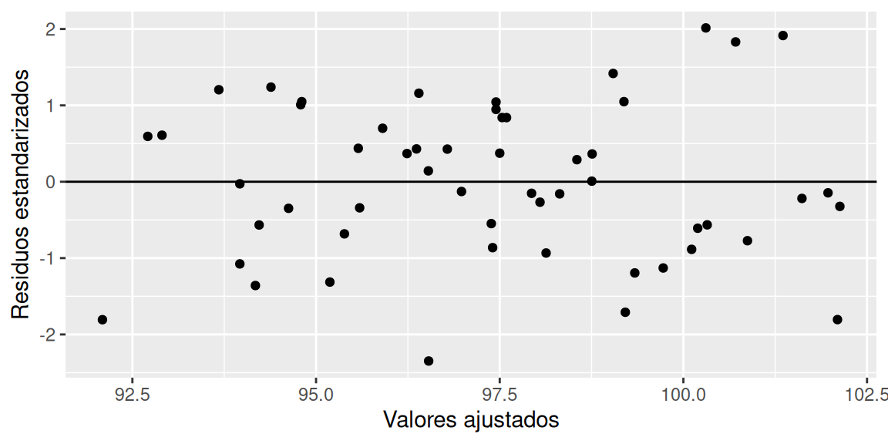

Unidad 3 Regresión Lineal
En general, las bases de datos que se trabajarán en esta sección son las siguientes:
Tasa Euro/Dólar: Contiene el registro diario histórico de la tasa de cambio del Euro a Dólar durante el 2023. Las columnas de la base de datos son las siguientes:
- Date: Fecha de medición (yyyy-mm-dd), desde enero del 2003 hasta enero del 2023.
- Open: tasa de apertura.
- High: tasa más alta alcanzada en el día.
- Low: tasa más baja alcanzada en el día.
- Close: tasa de cierre del día.
- Adj Close: tasa de cierre ajustada del día (precio de cierre sin dividendos).
El código para cargar la base de datos en R es:
Precios de electricidad: Un conjunto de datos históricos que contiene el precio por hora de la electricidad para Bélgica. Las columnas de la base de datos son las siguientes:
- MTU: Hora de inicio (formato fecha y hora) del coste de la electricidad.
- EUR_MWh: Precio por hora (Euros por MWh).
El código para cargar la base de datos en R es:
Pacientes: Contiene datos respecto a los ataques al corazón de distintos pacientes hospitalarios. El detalle de algunas de las columnas de la base de datos que utilizaremos son las siguientes:
- age: edad del paciente (en años).
- sex: sexo del paciente (Hombre: 1 y Mujer: 0).
- cp: Tipo de dolor en el pecho, Valor 1: angina típica, Valor 2: angina atípica, Valor 3: dolor no anginoso, Valor 4: asintomático.
- trtbps: presión arterial en reposo (en mm Hg).
- chol: nivel de colestorol (en mg/dl).
- fbs: azúcar en sangre en ayunas \(>\) 120 mg/dl (V = 1; F = 0).
- thalachh: frecuencia cardíaca máxima alcanzada (en latidos por minuto).
- oldpeak: tiempo de duración del último ataque al corazón (en minutos).
El código para cargar la base de datos en R es:
Ingreso: Contiene datos relacionados a características de ingresos de estudiantes a un determinada universidad. Las columnas de la base de datos son las siguientes.
- Sexo: Hombre o Mujer.
- Ingreso: indica la vía de ingreso del estudiante a la universidad, se clasifica en PTU u Otra.
- Logro: corresponde a la proporción de logro (número entre 0 y 1, un logro de 0.4 indica que el estudiante respondió correctamente un 40% de la prueba) del estudiante en el diagnóstico de “Comunicación escrita” aplicado por la universidad.
- LEN: Puntaje PTU - Lenguaje.
- NEM: Puntaje NEM del estudiante.
El código para cargar la base de datos en R es:
Imacec: Contiene los datos de los valores del Imacec mensual de distintos sectores desde enero del 2018 hasta junio del 2022. Las columnas de la base de datos son las siguientes:
- Ano: Año de medición del Imacec.
- Mes: Mes de medición del Imacec.
- Mineria: Imacec del sector de minería.
- Industria: Imacec del sector de industria.
El código para cargar la base de datos en R es:
3.1 Medidas de asociación lineal
3.1.1 Covarianza
Es posible entender las relaciones entre dos o más variables, gráficamente y a través de estadísticos. En esta sección seabarcarán las relaciones lineales entre dos variables cuantitativas, utilizando la Covarianza y la Correlación. El gráfico que apoya a estas dos medidas es el gráfico de dispersión.
La Covarianza entre dos variables de la misma muestra, se puede calcular como:
\[\begin{equation} S_{XY} = \displaystyle\frac{\displaystyle\sum_{i=1}^n(x_i-\bar{x})(y_i-\bar{y})}{n-1} \tag{3.1} \end{equation}\]La utilidad radica en el signo de esta expresión, el cual, da a conocer el tipo de relación lineal entre las variables \(X\) e \(Y\). Para interpretar esta expresión se puede usar la siguiente regla.
Si \(S_{XY} = 0\), entonces no existe relación lineal entre \(X\) e \(Y\).
Si \(S_{XY} > 0\), entonces existe una relación lineal directa o positiva entre \(X\) e \(Y\). Esto es, a mayores valores de \(X\), en promedio tenemos mayores valores de \(Y\) y viceversa.
Si \(S_{XY} < 0\), entonces existe una relación lineal inversa o negativa entre \(X\) e \(Y\). Esto es, a mayores valores de \(X\), en promedio tenemos menores valores de \(Y\) y viceversa.
Ejemplo 3.1 Por ejemplo, si \(S_{XY} = -1000\), ¿qué podemos decir acerca de la relación entre \(X\) e \(Y\)?
La relación entre las variables es inversa. No podemos decir nada acerca de qué tan fuerte es la relación; para eso tendríamos calcular el coeficiente de correlación.
Nota: En R, se utiliza el comando cov() para calcular la covarianza entre dos variables.
A continuación, se estudia gráficamente la covarianza entre dos variables. Para ello, se necesita del gráfico de dispersión y de las líneas promedio de ambas variables.
En este caso, la mayoría de los puntos están en los cuadrantes ‘\(+ +\)’ y ‘\(- -\)’, y en estos cuadrantes la expresión \((x_i-\bar{x})(y_i-\bar{y})\) es positiva; por eso la covarianza es positiva (aunque también necesario considerar que tan lejos están los puntos de la intersección de las líneas promedio). ¿Es pronunciada la relación lineal?
3.1.2 Correlación
Aunque con el signo de la covarianza podemos detectar el tipo de relación entre dos variables, al depender de las unidades de \(X\) y de \(Y\), no sabemos si corresponde a un relación fuerte o débil (es decir, la forma lineal es fuertemente o débilmente pronunciada); sólo sabemos el signo. Para solucionar esto, estandarizamos los valores. La fórmula que realiza este proceso utilizando la covarianza es
\[\begin{equation} r_{XY} = \frac{S_{XY}}{S_{X}S_{Y}} \tag{3.2} \end{equation}\]Este estadístico, también conocido como Coeficiente de correlación de Pearson se encuentra entre -1 y 1.
Si \(r_{XY} = 0\), entonces no hay relación lineal o con relación lineal débil entre las variables.
Si \(r_{XY}\) es cercano a 1, entonces hay relación lineal directa y fuerte entre variables.
Si \(r_{XY}\) es cercano a \(-1\), entonces hay relación lineal inversa y fuerte entre las variables.
Una regla más fina sobre la intensidad de la relación es (Ratner, 2009):
- \(r_{XY} = 0\) indica que no hay relación lineal.
- \(r_{XY} = 1\) indica una relación lineal positiva perfecta: a medida que una variable aumenta en sus valores, la otra variable también aumenta en sus valores a través de una regla lineal exacta.
- \(r_{XY} = -1\) indica una relación lineal negativa perfecta: a medida que una variable aumenta en sus valores, la otra variable disminuye en sus valores a través de una regla lineal exacta.
- Los valores entre \(0\) y \(0.3\) (\(0\) y \(−0.3\)) indican una relación lineal positiva (negativa) débil a través de una regla lineal inestable.
- Valores entre \(0.3\) y \(0.7\) (\(-0.3\) y \(−0.7\)) indican una relación lineal positiva (negativa) moderada a través de una regla lineal difusa-firme.
- Los valores entre \(0.7\) y \(1.0\) (\(−0.7\) y \(−1.0\)) indican una fuerte relación lineal positiva (negativa) a través de una regla lineal firme.
Ejercicio 3.1 Por ejemplo, si \(r_{XY} = -0.96\), ¿qué podemos decir acerca de la relación entre \(X\) e \(Y\)?
A continuación, se estudia gráficamente la correlación entre dos variables. Para ello, se necesita del gráfico de dispersión y una recta que refleje la asociación lineal (detalles de esta recta en secciones posteriores).
Nota: En R, se utiliza el comando cor() para calcular la correlación entre dos variables.
¿Cómo se comportan los puntos al rededor de la línea azul?
Ejercicio 3.2 La base de datos graficos+dolar.csv contiene el valor del dólar observado de algunos de los días de los meses de junio y julio del 2022, tomados por el el SII. A continuación:
- Realice un histograma del valor de dólar.
- Realice un histograma del valor de dólar diferenciado por mes. Utilice el comando
facet_grid(~Mes). - Reordene los gráficos por mes. Para ello convierta la variable Mes a factor, ordenando los meses como corresponde.
- Realice un gráfico de Violín con caja y promedio del valor de dolar. Interprete lo observado.
- Separe el gráfico anterior por mes. Comente lo observado.
- Estudie las medidas de asociación entre los valores del dólar de los primeros 18 registros de cada mes. Interprete. ¿Por qué no es posible comparar todos los registros de cada uno de los meses?
- Realice un gráfico de dispersión de los para estudiar las medidas de asociación entre las variables de la pregunta 6.
3.2 Regresión lineal simple
La regresión lineal simple (RLS) consiste en generar un modelo de regresión (ecuación de una recta) que permita explicar la relación lineal que existe entre dos variables. A la variable dependiente, predicha o respuesta se le identifica como \(Y\) y a la variable predictora o independiente como \(X\). (Devore, 2008, página 450)
El modelo de regresión lineal simple se describe de acuerdo a la ecuación:
\[\begin{equation} Y_i = \beta_0 + \beta_1X_i + \varepsilon_i \text{ , }i = 1,\ldots ,n \text{ , } \varepsilon_i \overset{\text{iid}}{\sim} N(0,\sigma^2) \tag{3.3} \end{equation}\]Una ejemplificación de esta ecuación es la siguiente (3.1).
Figura 3.1: Ecuación de regresión
Siendo \(\beta_0\) la ordenada en el origen, \(\beta_1\) la pendiente y \(\varepsilon\) el error aleatorio. Este último representa la diferencia entre el valor ajustado por la recta y el valor real (línea de color rojo en el gráfico en la figura 3.2), el cual, recoge el efecto de todas aquellas variables que influyen en \(Y\) pero que no se incluyen en el modelo como predictores.
Figura 3.2: Errores de una ecuación de regresión
La ecuación (3.3) representa la ecuación de regresión verdadera (o poblacional). Sin embargo, no es posible conocer el valor de \(\beta_0\) y \(\beta_1\), ya que son parámetros (de antemano, no se conocen todos los datos de la población), por lo cual, se determinan estimadores que permiten aproximar los valores de los parámetros a partir de una muestra, para así de determinar una ecuación de regresión estimada (3.4).
\[\begin{equation} Y_i = \widehat{\beta}_0 + \widehat{\beta}_1X_i \tag{3.4} \end{equation}\]3.2.1 Estimadores de mínimos cuadrados
Una forma intuitiva de abordar el problema de estimar \(\beta_0\) y \(\beta_1\) es minimizando los errores aleatorios. Para ello, se hace uso de la ecuación de regresión verdadera:
\[ Y_i = \beta_0 + \beta_1X_i + \varepsilon_i \]
Luego, es posible escribir el error aleatorio de la siguiente manera:
\[\begin{equation} \varepsilon_i = Y_i - [\beta_0 + \beta_1X_i] \tag{3.5} \end{equation}\]Para considerar el error en cada uno de los puntos al rededor de la recta de regresión verdadera se considera la suma de los errores. Sin embargo, para tener mayor facilidad en el proceso de determinar los estimadores, se elevan los errores al cuadrado (suma cuadrática de errores).
\[\begin{equation} \sum_{i=1}^n\varepsilon_i^2 = \sum_{i=1}^n (Y_i - [\beta_0 + \beta_1X_i])^2 \tag{3.6} \end{equation}\]Llegado a este punto, es natural minimizar esta función, ya que los valores de \(\beta_0\) y \(\beta_1\) estimados buscan dar lugar a la recta que “pasa lo más cerca posible de todos los puntos”. Los estimadores de \(\beta_0\) y \(\beta_1\) se denotan por \(\widehat{\beta}_0\) y \(\widehat{\beta}_1\) respectivamente, y son denominados como Estimadores de Mínimos Cuadrados (EMC).
Los estimadores de \(\beta_0\) y \(\beta_1\) son (detalles del desarrollo en el anexo A.1):
\[\begin{equation} \widehat{\beta}_1 = \frac{\displaystyle\sum_{i=1}^n(x_i-\bar{x})(y_i-\bar{y})}{\displaystyle\sum_{i=1}^n(x_i-\bar{x})^2} = \frac{S_Y}{S_X}r_{XY} \tag{3.7} \end{equation}\] \[\begin{equation} \widehat{\beta}_0 = \bar{y} - \widehat{\beta}_1\bar{x} \tag{3.8} \end{equation}\]- Los valores de \(S_y\) y \(S_x\) son las desviaciones estándar muestrales de cada variable y \(r_{XY}\) el coeficiente de correlación entre estas.
- \(\widehat{\beta}_0\) es el valor esperado la variable \(Y\) cuando \(X = 0\), es decir, la intersección de la recta con el eje \(y\). En ocasiones, no tiene interpretación práctica (situaciones en las que \(X\) no puede adquirir el valor 0).
- \(\widehat{\beta}_1\) corresponde al valor de la pendiente. La interpretación de este valor se detalla más adelante.
- \(\widehat{Y}\) se entiende como el valor esperado, es decir, el valor promedio (muestral) de \(Y\).
- La diferencia entre los valores reales \(Y\) (en la base de datos) y los valores de la recta estimada (\(\widehat{Y}\)) se denominan residuos, que se denotan por la letra \(e\). Estos se observan de la misma forma que los errores aleatorios (figura 3.2).
Ejemplo 3.2 El archivo cuota+patrimonio.csv contiene los valores cuota (pesos) y valor del patrimonio (miles de millones de pesos) de los primeros dos meses del año 2022 de la AFP UNO. En R:
- Realice un estudio inicial de los datos, elaborando un gráfico de violín + caja + promedio para cada una de las variables.
Inspeccionamos la base de datos.
## 'data.frame': 59 obs. of 2 variables:
## $ Valor.Cuota : num 65594 65594 65356 65860 65813 ...
## $ Valor.Patrimonio: num 186 186 185 187 187 ...Luego, realizamos el gráfico de violín con caja y promedio.
ggplot(data = datos, aes(y = 1, x = Valor.Cuota)) +
geom_violin(trim = F) +
geom_boxplot(width = 0.1) +
stat_summary(fun = mean, color = "red", geom = "point", orientation = "y") +
labs(y = "", x = "Pesos", title = "Valor Cuota")Se observa, que la mayor concentración de datos se encuentra entre el primer y segundo cuartil. Además, el cierre superior del gráfico de violín presenta una mayor concentración de datos que el cierre inferior, lo cual, explica la posición del promedio por sobre la mediana.
ggplot(data = datos, aes(y = 1, x = Valor.Patrimonio)) +
geom_violin(trim = F) +
geom_boxplot(width = 0.1) +
stat_summary(fun = mean, color = "red", geom = "point", orientation = "y") +
labs(y = "", x = "Miles de millones de pesos", title = "Valor Patrimonio")Se observa, que la mayor concentración de datos se encuentra entre el primer y segundo cuartil. Una segunda concentración se encuentra por sobre el tercer cuartil , lo cual, explica la posición del promedio por sobre la mediana.
- Estudie la correlación entre ambas variables.
## [1] 0.9218759El valor de la correlación indica que la relación lineal entre las dos variables es positiva y fuerte. Esto quiere decir que, cuando en promedio el valor cuota aumenta, el promedio el valor del patrimonio también aumenta.
- Considerando que desea explicar el valor del patrimonio a partir del valor cuota. Determine los valores de \(\widehat{\beta}_0\) y \(\widehat{\beta}_1\) utilizando el comando
lm().
##
## Call:
## lm(formula = Valor.Patrimonio ~ Valor.Cuota, data = datos)
##
## Coefficients:
## (Intercept) Valor.Cuota
## -1.353e+02 4.936e-03- Escriba la ecuación de la recta de regresión ajustada.
\[ \widehat{Y}_i = -135.3 + 0.004936X_i \]
- Realice un gráfico de la la recta de regresión y los residuos del modelo.
# Guardamos los valores de la recta estimada en una nueva columna en la base de datos
datos$Ajustados = modelo$fitted.values
ggplot(data = datos, aes(x = Valor.Cuota, y = Valor.Patrimonio)) +
geom_segment(aes(x = Valor.Cuota, xend = Valor.Cuota,
y = Valor.Patrimonio, yend = Ajustados), color = "red") +
labs(x = "Valor Cuota", y = "Valor Patrimonio",
title = "Ecuación de regresión ajustada") +
geom_point() +
geom_smooth(method = lm, se = FALSE, formula = 'y ~ x')Para interpretar cada uno de los beta estimados se debe hacer en función de la variable de estudio (variable dependiente). En este sentido,
\(\widehat{\beta}_1\): corresponde a la pendiente de la ecuación de la recta de regresión ajustada, e indica un avance lineal constante en crecimiento o en decrecimiento dependiendo de su valor. La interpretación de este parámetro, está sujeta a la unidad de medida de la variable predictora \(X\), de tal manera, que una cambio en una unidad de medida de la variable \(x\), afecta en promedio \(\widehat{\beta}_1\) unidades en la variable \(Y\).
En el ejemplo 3.2, el valor de \(\widehat{\beta}_1\) es de 0.004936 , lo cual indica que por cada unidad de valor cuota (por cada peso), el valor del patrimonio aumenta en promedio 0.004936 miles de millones pesos.
\(\widehat{\beta}_0\): es el intercepto de la ecuación de la recta de regresión ajustada, y se debe verificar que el valor obtenido tenga sentido con el fenómeno. En el ejemplo 3.2, se obtiene un valor lejano a cero (-135.2584663), por lo que, cuando \(\beta_1x\) vale cero (es decir, una cantidad de cuotas igual a 0), el valor del promedio del patrimonio es menor a cero. Esto tiene sentido, ya que las cuotas no constituyen la totalidad del valor del patrimonio de la AFP (en el ejemplo se trabaja con un fondo en específico de los cinco existentes, de un determinado producto de inversión).
Ejercicio 3.3 Utilizando la base de datos Ingreso:
- Realice un estudio inicial de los datos, elaborando un gráfico de violín + caja + promedio para cada una de las variables cuantitativas continuas, mientras que para las variables categóricas elabore tablas de frecuencias relativas.
- Considerando que desea explicar la proporción de logro en el diagnóstico de comunicación escrita a partir del puntaje en la PTU de Lenguaje (considere esto para las siguientes preguntas), estudie la correlación entre ambas variables.
- Determine los valores de \(\widehat{\beta}_0\) y \(\widehat{\beta}_1\) utilizando el comando
lm(). Interprete los valores. - Escriba la ecuación de la recta de regresión ajustada.
- Realice un gráfico de la la recta de regresión ajustada y los residuos del modelo.
3.2.2 Sumas cuadráticas
En un modelo sin variables independientes los valores ajustados o predichos son iguales al promedio de las observaciones, \(\bar{Y}\) (tal como se mostró en la interpretación asociada a las estimaciones de los parámetros). Los residuos de dicho modelo corresponden a \(Y_i - \bar{Y}\). La suma de cuadrados total (SCT) se define como:
\[\begin{equation} \text{SCT} = \sum_{i=1}^n\left( Y_i - \bar{Y} \right)^2 \tag{3.9} \end{equation}\]¿Cómo se relacionan la SCT y la suma cuadrática de errores (SCE)? Consideremos la siguiente igualdad.
\[\begin{equation} Y_i - \bar{Y} = \left( \widehat{Y}_i - \bar{Y} \right) + \left( Y_i - \widehat{Y}_i \right) \tag{3.10} \end{equation}\]A partir de esta igualdad se demuestra que:
\[\begin{equation} \underbrace{\sum_{i=1}^n\left( Y_i - \bar{Y} \right)^2}_{\text{SCT}} = \underbrace{\sum_{i=1}^n\left( \widehat{Y}_i - \bar{Y} \right)^2}_{\text{SCReg}} + \underbrace{\sum_{i=1}^n\left( Y_i - \widehat{Y}_i \right)^2}_{\text{SCE}}, \tag{3.11} \end{equation}\]donde,
Suma de cuadrados total (SCT): corresponde a la variabilidad de los datos.
Suma de cuadrados de la regresión (SCReg): corresponde a la variabilidad de los datos que es explicada por el modelo de regresión.
Suma de cuadrados del error (SCE): corresponde a la variabilidad de los datos que no es explicada por el modelo.
En la experimentación, se quiere que SCE sea pequeña y que SCReg sea grande.
Las expresiones involucradas en la ecuación (3.11) dan lugar a reescribir distintas expresiones, entre las cuales se encuentra, el coeficiente de determinación (\(R^2\)) y el error estándar residual explicados en la sección 3.2.4, y el estadístico asociado a las pruebas de hipótesis de los parámetros explicado en la sección 3.2.3.
3.2.3 Pruebas de hipótesis
Los modelos de regresión lineal simple incluyen pruebas de hipótesis asociadas a los betas, además de otro tipo de información. En R es posible utilizar el comando summary() para acceder al resumen de información. A continuación, a modo de ejemplo se utiliza el modelo elaborado en el ejemplo 3.2.
##
## Call:
## lm(formula = Valor.Patrimonio ~ Valor.Cuota, data = datos)
##
## Residuals:
## Min 1Q Median 3Q Max
## -8.0070 -2.9085 -0.0636 3.8231 8.5680
##
## Coefficients:
## Estimate Std. Error t value Pr(>|t|)
## (Intercept) -1.353e+02 1.695e+01 -7.982 7.37e-11 ***
## Valor.Cuota 4.936e-03 2.748e-04 17.962 < 2e-16 ***
## ---
## Signif. codes: 0 '***' 0.001 '**' 0.01 '*' 0.05 '.' 0.1 ' ' 1
##
## Residual standard error: 4.215 on 57 degrees of freedom
## Multiple R-squared: 0.8499, Adjusted R-squared: 0.8472
## F-statistic: 322.6 on 1 and 57 DF, p-value: < 2.2e-16El detalle por columna es el siguiente.
En primer lugar, ya conocemos los coeficientes del modelo (betas estimados) y cómo se interpretan. Estos valores los podemos encontrar en la columna llamada Estimate.
La segunda columna (Std. Error) corresponde a la desviación estándar de la estimación de cada uno de los betas. Como cada uno de los errores (\(\varepsilon_i\)) tiene distribución normal, esto implica que cada uno de los \(\beta\) tenga distribución t – Student (no analizaremos esto en profundidad).
La tercera y cuarta columna están diseñadas para probar una determinada prueba de hipótesis relacionada a los \(\beta\), llamada prueba de no nulidad. En este caso, cada fila aborda la siguiente hipótesis:
\[\begin{equation} \notag \begin{split} H_0:&\beta_i = 0\\ H_1:&\beta_i \neq 0\\ \end{split} \end{equation}\]El estadístico para cada uno de los beta se obtiene dividiendo el valor estimado (Estimate) por la desviación estándar (Std. Error). El resultado de estos valores, se puede apreciar en la columna t value.
Finalmente, se calcula el valor - p asociado a cada una de las hipótesis del punto anterior, con la fórmula \(2\cdot(1-pt(|t_0|, n-2))\). El valor resultante de esta expresión para cada uno de los betas se encuentra en la columna Pr(>|t|). La interpretación de este valor es mediante el criterio del valor - p presentado en la unidad anterior.
En el ejemplo 3.2, al no rechazarse la hipótesis nula asociada a cada beta estimado, se tiene que cada variable (intercepto y valor cuota) son relevantes para explicar la variable respuesta (valor del patrimonio). Sin embargo, esto no es un regla decidora respecto a si una variable debe o no considerarse en el modelo, es decir,
No rechazar las hipótesis nula de los beta estimados, indica que su “valor” es cero, por lo que no “aportarían” al modelo de regresión construido. En este punto, muchas personas eliminarían la variable utilizada para construir el modelo (el valor cuota) (esto es una de tantas técnicas aplicables, pero que no profundizaremos) o, cambiarían la variable explicativa utilizada (no considerarían el valor cuota, sino que utilizarían otra variable).
A pesar de que los valores-p puedan no ser significativos (mayores a 0.05), es decir, no rechazar las hipótesis nulas; es posible forzar la permanencia de la variable en el modelo debido al criterio experto del profesional.
Por último, al final de la salida del resumen, encontramos el valor llamado F-statistic. Este valor, es un estadístico que prueba de hipótesis llamada prueba de no nulidad conjunta,
\[\begin{equation} \notag \begin{split} H_0:&\text{ Todos los betas asociados a las covariables valen 0}\\ H_1:&\text{ Almenos uno de los betas asociados a las covariables es distinto de 0}\\ \end{split} \end{equation}\]Se rechaza \(H_0\) cuando:
\[\begin{equation} F_0 = \frac{\text{SCReg}}{\text{MCE}} \geq F_{1-\alpha, 1, n-2}. \tag{3.12} \end{equation}\]con una significancia \(\alpha\). El valor de MCE se especifica en la sección 3.2.4.
Nota: esta prueba de hipótesis no considera \(\beta_0\).
En el ejemplo 3.2, se observa un valor del estadístico igual a 322.6 con 1 y 57 grados de libertad, además de un valor menor a 0.05. Por lo tanto, existe suficiente evidencia estadística para rechazar \(H_0\), es decir, almenos uno de los betas asociados a las covariables es distinto de 0.
Ejercicio 3.4 Utilizando la base de datos Pacientes:
- Ajuste un modelo para estudiar el nivel de colesterol de los pacientes a partir de su edad. Luego, estudie las pruebas de hipótesis asociadas utilizando una confianza del 95%.
- Ajuste un modelo para estudiar el tiempo de duración del último ataque al corazón de los pacientes a partir de su edad. Luego, estudie las pruebas de hipótesis asociadas utilizando una confianza del 95%.
3.2.4 Métricas
La salida de R nos proporciona dos valores que permiten evaluar al modelo de regresión lineal simple:
Residual standard error (error estándar residual): corresponde a la desviación estándar de los residuos, es decir, que mientras menor sea este valor, los puntos se alejarán menos de la recta de regresión. Este valor es una estimación de \(\sigma\), que en términos de las expresiones de la ecuación (3.11) se tiene que:
\[\begin{equation} \widehat{\sigma}^2 = \frac{\text{SCE}}{n-2} = \text{MCE}, \tag{3.13} \end{equation}\]donde, MCE se denomina media cuadrática del error. El denominador de esta expresión corresponde al total de observaciones (\(n\)) menos la cantidad de parámetros del modelo (\(\beta_1\) y \(\beta_2\)). Finalmente, el valor del error estándar residual (\(\widehat{\sigma}\)) es igual a \(\sqrt{\text{MCE}}\).
Multiple R-squared o \(R^2\): es un métrica de error de la regresión que mide el rendimiento del modelo, corresponde a la proporción de variabilidad explicada por la regresión sobre la variabilidad total de las observaciones. En términos de las expresiones de la ecuación (3.11) se tiene que:
\[\begin{equation} R^2 = \frac{\text{SCReg}}{\text{SCT}} \tag{3.14} \end{equation}\]
En el ejemplo 3.2 se obtiene un error estándar residual de 4.2. Sin embargo, NO EXISTE un regla que determine cuando un error estándar residual es bueno o malo. En general, este valor se utiliza para comparar don o más modelos que estudian la misma variable respuesta pero con distintas variables predictoras (variables independientes), para saber cual realiza un mejor ajuste.
Por otro lado, se tiene un valor de \(R^2\) igual a 0.84, el cual es muy alto, por lo que se logra explicar gran parte de la variable respuesta. Al igual que el error estándar residual, no existe una regla para determinar cuando un valor de \(R^2\) es bueno o malo, aunque valores cercanos a cero indican que el poder explicativo del modelo es extremadamente pobre; y a su vez, valores muy cercanos a 1 son muy buenos, aunque extremadamente sospechosos.
Lo anteriormente explicado se puede observar mediante los siguientes comandos, aunque es posible observarlos en salida general del comando summary().
# Resumen del modelo
summ = summary(modelo)
print(c("Error estándar residual" = summ$sigma, "R cuadrado" = summ$r.squared))## Error estándar residual R cuadrado
## 4.2148482 0.8498553Ejercicio 3.5 Utilizando la base de datos Ingreso:
- Ajuste un modelo para estudiar la proporción de logro a partir el puntaje NEM.
- Ajuste un modelo para estudiar la proporción de logro a partir el puntaje PTU de la prueba de Lenguaje.
- Obtenga de manera manual el estadístico F asociado a la prueba de hipótesis de nulidad conjunta de cada modelo. Interprete, utilizando una confianza del 95%.
- Compare los ajustes de ambos modelos utilizando el error estándar residual y el \(R^2\), obteniendo las métricas de manera manual. Interprete.
3.2.5 Supuestos
Cuándo se elabora un modelo de regresión lineal, es necesario verificar el cumplimiento de condiciones para la correcta interpretación y utilización del modelo desarrollado. Las condiciones que se deben cumplir se denominan supuestos. A continuación, se detallan los 4 supuestos que se deben estudiar, utilizando como ejemplo el modelo elaborado en el ejemplo 3.2.
3.2.5.1 Linealidad
La relación entre ambas variables (dependiente e independiente) debe ser lineal. Para observar el comportamiento es posible realizar un gráfico de puntos entre la variable predictora (\(X\)) y la variable de estudio (\(Y\)).
ggplot(data = datos) +
geom_point(aes(x = Valor.Cuota, y = Valor.Patrimonio)) +
labs(x = "Valor Cuota (pesos)", y = "Valor Patrimonio \n (miles de millones de pesos)")La interpretación del comportamiento queda a discreción del profesional. En este caso, se aprecia una clara tendencia lineal, por lo que se asume que se cumple el supuesto de linealidad.
3.2.5.2 Normalidad
Los residuos deben distribuir Normal con media 0 (\(\mu\)) y varianza 1 (\(\sigma^2\)). Para ello, se pueden ejecutar varios comandos en R para probar esta hipótesis. El más conocido es el comando shapiro.test(). La hipótesis es
Se definen los residuos estandarizados, \(r_i\), como los residuos, \(e_i\), divididos por su error estándar:
\[\begin{equation} r_i = \frac{e_i}{\widehat{\text{es}}(e_i)}, i = 1,\ldots,n \tag{3.15} \end{equation}\]Utilizando la definición dada en la ecuación (3.13), se tiene que
\[\begin{equation} r_i = \frac{e_i}{\sqrt{\text{MCE}}} \tag{3.16} \end{equation}\]residuos = resid(modelo) # Residuos
residuos_estandarizados = rstandard(modelo) # Residuos estandarizados
shapiro.test(x = residuos_estandarizados)##
## Shapiro-Wilk normality test
##
## data: residuos_estandarizados
## W = 0.96765, p-value = 0.1177Considerando una confianza del 95%, el valor-p de 0.1177 no es menor o igual a la significancia de 0.05, por lo cual, no existe suficiente evidencia estadística para rechazar la hipótesis nula, es decir, se asume que los residuos (estandarizados) tienen distribución normal.
En caso de que la cantidad de datos sea mayor a 5000, el comando shapiro.test() fallará. En su lugar, es posible usar el comando ks.test(), un ejemplo con los residuos del ejemplo anterior es
##
## Asymptotic one-sample Kolmogorov-Smirnov test
##
## data: residuos_estandarizados
## D = 0.12515, p-value = 0.3138
## alternative hypothesis: two-sidedUna tercera opción es utilizar el comando ad.test() de la librería nortest
##
## Anderson-Darling normality test
##
## data: residuos_estandarizados
## A = 0.71269, p-value = 0.059623.2.5.3 Homocedasticidad
Este supuesto hace referencia a la necesidad de una varianza constante de los residuos. Para verificar esto, se grafican los residuos estandarizados del modelo versus los valores de la variable predictora (o variable predicha, \(\widehat{y}\)). Se busca que las amplitudes verticales en las figuras sean similares en la medida que se recorre el eje de las abscisas. Similarmente, es posible ejecutar una prueba de hipótesis (Breucsh - Pagan) en R con el comando bptest() de la librería lmtest, siendo
valores_predichos = modelo$fitted.values
ggplot(data = datos) +
geom_point(aes(x = valores_predichos,
y = residuos_estandarizados)) +
geom_hline(yintercept = 0) +
labs(x = "Valores predichos", y = "Residuos estandarizados")Las amplitudes verticales no tiene un patrón claro de cambio (puede ser difícil de interpretar), por lo que utilizaremos la prueba de Breucsh - Pagan para decidir.
##
## studentized Breusch-Pagan test
##
## data: Valor.Patrimonio ~ Valor.Cuota
## BP = 0.30064, df = 1, p-value = 0.5835Considerando una confianza del 95%, el valor-p de 0.5835 no es menor o igual a la significancia de 0.05, por lo cual, no existe suficiente evidencia estadística para rechazar la hipótesis nula, es decir, se asume que los residuos tienen varianza constante (homocedasticidad).
3.2.5.4 Independencia
El último supuesto corresponde a la independencia de los residuos, es decir que, no deben estar correlacionados entre ellos (autocorrelación igual a 0). La prueba de hipótesis de Durbin - Watson está diseñada para detectar autocorrelación en los residuos. Para ejecutar esta prueba en R se debe utilizar la función dwtest() de la librería lmtest. La hipótesis es
# Prueba de Durbin Watson
dwtest(formula = Valor.Patrimonio ~ Valor.Cuota,
data = datos,
alternative = "two.sided")##
## Durbin-Watson test
##
## data: Valor.Patrimonio ~ Valor.Cuota
## DW = 0.080415, p-value < 2.2e-16
## alternative hypothesis: true autocorrelation is not 0Considerando una confianza del 95%, el valor-p de \(2.2 \times 10^{-16}\) es menor o igual a la significancia de 0.05, por lo cual, existe suficiente evidencia estadística para rechazar la hipótesis nula, es decir, se asume que los residuos no son independientes (autocorrelación distinta de 0).
Conclusión: En resumen, se han cumplido 3 de los 4 supuestos planteados. Esto es muy común que suceda en la realidad, además de existir diversos factores que influyen en los resultados vistos.
Ejercicio 3.6 Utilizando la base de datos Ingreso, ajuste el modelo:
\[\widehat{Y}_{\text{Logro}} = \widehat{\beta}_0 + \widehat{\beta}_1X_{\text{NEM}}\] Luego,
- Escriba la ecuación de regresión ajustada.
- Verifique los supuestos del modelo, utilizando una confianza del 95% cuando corresponda.
Ejercicio 3.7 Utilizando la base de datos Pacientes, elabore un modelo para estudiar la variable oldpeak a través de la variable chol. Estudie los supuestos del modelo, utilizando una confianza del 92%.
Ejercicio 3.8 La base de datos terremotos.csv, contiene datos sobre los terremotos ocurridos a nivel mundial entre los años 1900 y 2014. Las columnas de la base de datos son:
- Ano: año de ocurrencia del terremoto.
- Latitud: grados decimales de la coordenada de latitud (valores negativos para latitudes del sur).
- Longitud: grados decimales de la coordenada de longitud (valores negativos para longitudes occidentales).
- Profundidad: profundidad del evento en kilómetros.
- Magnitud: magnitud del evento (la escala no es fija, ya que, a través de los años, la escala a cambiado según el método de medición. Sin embargo, todos las magnitudes son comparables, indicando que a mayor magnitud, mayor es la intensidad en movimiento/fuerza del terremoto).
Ajuste los siguientes modelos:
\(Y_{\text{Magnitud}} = \beta_0 + \beta_1X_{\text{Profundidad}} + \varepsilon, \varepsilon_i \overset{\text{iid}}{\sim} N(0,\sigma^2)\)
\(Y_{\text{Magnitud}} = \beta_0 + \beta_1X_{\text{Latitud}} + \varepsilon, \varepsilon_i \overset{\text{iid}}{\sim} N(0,\sigma^2)\)
Luego, para cada modelo:
- Estudie la relación entre la variable dependiente e independiente mediante gráficos de dispersión.
- Escriba la ecuación de regresión ajustada.
- Interprete los betas estimados.
- Estudie los supuestos del modelo, utilizando una confianza del 98%.
3.3 Regresión lineal múltiple
A diferencia de la regresión lineal simple, la regresión lineal múltiple (RLM) hace uso de más de una variable independiente para modelar el comportamiento de variable de estudio (Devore, 2008, página 528). La expresión de un modelo de regresión múltiple es:
\[\begin{equation} Y = X\beta + \varepsilon \tag{3.17} \end{equation}\]con \(\varepsilon \sim N(0,\sigma^2I)\) independientes. El detalles de las matrices es el siguiente,
\[\begin{equation} \begin{pmatrix} y_1\\ y_2\\ \vdots\\ y_n \end{pmatrix} = \begin{pmatrix} 1 & x_{11} & x_{12} & \cdots & x_{1k}\\ 1 & x_{21} & x_{22} & \cdots & x_{2k}\\ \vdots & \vdots & \vdots & \ddots & \vdots \\ 1 & x_{n1} & x_{n2} & \cdots & x_{nk}\\ \end{pmatrix} \begin{pmatrix} \beta_0\\ \beta_1\\ \vdots \\ \beta_k\\ \end{pmatrix} + \begin{pmatrix} \varepsilon_1\\ \varepsilon_2\\ \vdots \\ \varepsilon_n\\ \end{pmatrix}. \tag{3.18} \end{equation}\]Una expresión equivalente es:
\[\begin{equation} y_i = \beta_0 + \sum_{j=1}^k x_{ij}\beta_j +\varepsilon_i\text{, } i = 1,\dots,n \text{, } \varepsilon_i \overset{\text{iid}}{\sim} N(0,\sigma^2) \tag{3.19} \end{equation}\]3.3.1 Estimadores de mínimos cuadrados
Al igual que el una regresión lineal simple, se busca minimizar la suma cuadrática de los errores (SCE). Sin embargo, al trabajar con matrices, el proceso de minimización de la SCE da como resultado los siguientes estimadores de mínimos cuadrados (EMC), valores ajustados y residuos.
\[\begin{equation} \widehat{Y} = X\widehat{\beta} \tag{3.20} \end{equation}\] \[\begin{equation} \widehat{\beta} = (X^tX)^{-1}X^tY \tag{3.21} \end{equation}\] \[\begin{equation} \widehat{Y} = X(X^tX)^{-1}X^tY \tag{3.22} \end{equation}\]Además, los residuos se calculan como
\[\begin{equation} e = Y - \widehat{Y} \tag{3.23} \end{equation}\]Cabe mencionar, que se mantiene la igualdad respecto a la descomposición de la SCT expresada en la ecuación (3.11).
Ejemplo 3.3 Utilizando la base de datos Imacec , se debe considerar un modelo que estudie el valor del Imacec de Minería a base del Imacec de Industria y del Año de medición, con el fin de determinar los beta estimados, los valores ajustados y los errores del modelo, mediante las fórmulas explicadas anteriormente.
Los modelos poblacional y ajustado son:
- Modelo poblacional:
- Modelo estimado:
# Cargamos previamente la base de datos, guardándola previamente con el nombre "df"
# Para conformar la matriz de covariables (X) extraemos las columnas relevantes de la base de datos
X = df[,c(1,4)] # Año e Imacec de Industria
# Agregamos la columna de unos que debe ir antes de las otras
X = cbind(1, X)
# Cambiamos el formato de X a matriz
X = as.matrix(X)
# Extraemos la variable independiente (en formato de matriz)
Y = as.matrix(df$Mineria)
# Determinemos los estimadores de los beta
betas.gorro = solve(t(X)%*%X)%*%t(X)%*%Y
# El comando solve() calcula la inversa de una matriz.
# el operador %*% es para multiplicar matrices.
# El comando t() es para calcular una matriz traspuesta de una matriz.Los valores estimados de los beta son:
## [,1]
## 1 3293.7998054
## Ano -1.5984756
## Industria 0.3224822Los valores ajustados son:
## [,1]
## [1,] 100.19527
## [2,] 98.13138
## [3,] 101.96892
## [4,] 102.09791
## [5,] 102.13016
## [6,] 100.87248Los residuos del modelo son:
## [,1]
## [1,] -3.6952686
## [2,] -5.6313828
## [3,] -0.8689205
## [4,] -10.7979133
## [5,] -1.9301616
## [6,] -4.6724811La ecuación de regresión ajustada es:
\[ \widehat{Y}_{\text{Imacec Minería}} = 3293.79 -1.59X_{\text{Año}} + 0.32X_{\text{Imacec Industria}} \]
El modelo ajustado del ejemplo 3.3 se elabora con el siguiente comando en R:
##
## Call:
## lm(formula = Mineria ~ Ano + Industria, data = df)
##
## Coefficients:
## (Intercept) Ano Industria
## 3293.7998 -1.5985 0.3225La interpretación de los beta estimados es similar a la vista en regresión lineal simple, aunque la estructura de la expresión ya no es una recta como tal. Considerando la salida correspondiente al ejemplo 3.3:
\(\widehat{\beta}_0\): en la salida de R tiene el nombre de Intercept, su interpretación es igual a la vista en regresión lineal, es decir, corresponde al valor esperado de \(y\) cuando las covariables tienen un valor nulo (igual a 0).
Respecto al ejemplo, se interpreta que, cuando se está en el año 0 y, el valor del Imacec de industria es de 0 puntos, entonces, el valor promedio (o esperado) del Imacec de Minería es de \(\widehat{\beta}_0 = 3293.79\). Este valor carece de sentido, ya que el Imacec se empezó a utilizar en 1984, por lo que sería recomendable ajustar los años para considerar el tiempo inicial en 0 (1984).
\(\widehat{\beta}_j\): dado un cambio en una unidad de medida de variable \(x_j\) (considerando que el resto de covariables se mantiene constante), en promedio, la variable \(y\) se ve afectada (aumenta o disminuye) en \(\widehat{\beta}_j\) unidades.
Respecto al ejemplo:
\(\widehat{\beta}_1 = -1.598\): Por cada año que transcurre, el Imacec de Minería disminuye en promedio \(1.598\) unidades. Considerando que el resto de covariables se mantiene constante.
\(\widehat{\beta}_2 = 0.322\): Por cada unidad que aumenta el Imacec de Industria, el Imacec de Minería aumenta en promedio \(0.322\) unidades. Considerando que el resto de covariables se mantiene constante.
Ejercicio 3.9 Utilizando la base de datos Pacientes:
- Ajuste un modelo para estudiar la presión arterial en reposo, a partir de la edad, frecuencia cardíaca máxima alcanzada y el nivel de colesterol del paciente.
- Interprete los parámetros estimados.
- Escriba el modelo poblacional y la ecuación de regresión ajustada.
Ejercicio 3.10 Utilizando la base de datos Ingreso:
- Ajuste un modelo para estudiar la variable Logro a partir de las variables LEN y NEM.
- Interprete los parámetros estimados.
- Escriba el modelo poblacional y la ecuación de regresión ajustada.
3.3.2 Covariables cualitativas
En un modelo de regresión lineal es posible utilizar variable cualitativas, para ello es necesario usar variables indicadoras que toman los valores 0 o 1 (Kutner et al., 2004). Por ejemplo, consideremos un extracto de la base de datos del Imacec del ejemplo 3.3, el cual contenga únicamente los valores asociados a los meses de enero y febrero.
## 'data.frame': 10 obs. of 4 variables:
## $ Ano : int 2018 2018 2019 2019 2020 2020 2021 2021 2022 2022
## $ Mes : chr "ene" "feb" "ene" "feb" ...
## $ Mineria : num 96.5 92.5 92 82.2 94 91.2 92.5 85.9 87.5 81.4
## $ Industria: num 99.6 93.2 101.9 93.2 100.8 ...Suponiendo que, se desea estudiar el Imacec de Minería a través del Imacec de Industria y el mes de medición, el modelo poblacional es el siguiente:
\[Y_{\text{Imacec Minería}} = \beta_0 + \beta_1X_{\text{Imacec Industria}} + \beta_2I_{\text{Mes = febrero}} + \varepsilon, \varepsilon_i \overset{\text{iid}}{\sim} N(0,\sigma^2)\]
La covariable \(I_{\text{Mes = febrero}}\) corresponde a una indicatriz, esta función vale 1 para el mes que se especifica (febrero en este caso) y 0 en otro caso (más detalles en el anexo D.1). El valor del Mes que no se observa en el modelo es llamado categoría de referencia. Ajustando el modelo en R se obtiene el siguiente resumen.
modelo_con_categorias = lm(Mineria ~ Industria + Mes, data = extracto)
summary(modelo_con_categorias)##
## Call:
## lm(formula = Mineria ~ Industria + Mes, data = extracto)
##
## Residuals:
## Min 1Q Median 3Q Max
## -5.2251 -3.5988 -0.2889 3.3713 5.6703
##
## Coefficients:
## Estimate Std. Error t value Pr(>|t|)
## (Intercept) 111.086 110.750 1.003 0.349
## Industria -0.186 1.108 -0.168 0.871
## Mesfeb -6.920 6.945 -0.996 0.352
##
## Residual standard error: 4.563 on 7 degrees of freedom
## Multiple R-squared: 0.3722, Adjusted R-squared: 0.1929
## F-statistic: 2.075 on 2 and 7 DF, p-value: 0.196Es posible apreciar, que de los betas estimados, el que está asociado a la variable Mes solo corresponde al valor de febrero. En este sentido, la interpretación de \(\widehat{\beta}_2\) es la siguiente: Cuando el mes de medición es en febrero, el Imacec de Minería es en promedio 6.92 unidades inferior al mes de enero.
La ecuación de regresión ajustada es:
\[\widehat{Y}_{\text{Imacec Minería}} = 111.086 - 0.186X_{\text{Imacec Industria}} - 6.920I_{\text{Mes = febrero}}\]
La forma en la que R selecciona la categoría de referencia es alfanumérica, sin embargo, es posible asignarla manualmente mediante el comando as.factor().
Para modelos que consideren variables con más opciones de categoría, se debe agregar una indicatriz por cada categoría a excepción de la categoría de referencia. Por ejemplo, si consideramos un modelo que estudie el el Imacec de Minería a través del Imacec de Industria y el Mes, siendo está última una variable con tres opciones (marzo, abril y mayo). El modelo poblacional es el siguiente:
\[\begin{equation} \notag \begin{split} Y_{\text{Imacec Minería}} = &\beta_0 + \beta_1X_{\text{Imacec Industria}} + \beta_2I_{\text{Mes = abril}} + \\ &\beta_3I_{\text{Mes = mayo}} + \varepsilon, \varepsilon_i \overset{\text{iid}}{\sim} N(0,\sigma^2)\\ \end{split} \end{equation}\]Se puede observar, que dado el modelo poblacional planteado, la categoría de referencia de la variable Mes corresponde a marzo.
Ejercicio 3.11 Utilizando la base de datos Ingreso, ajuste el siguiente modelo.
\[ Y_{\text{Logro}} = \beta_0 + \beta_1I_{\text{Sexo = Hombre}} + \beta_2X_{\text{NEM}} + \varepsilon, \varepsilon_i \overset{\text{iid}}{\sim} N(0,\sigma^2) \] Luego,
- Escriba la ecuación de regresión ajustada.
- Interprete los betas estimados.
Ejercicio 3.12 La base de datos CO2 (propia de R) contiene datos de una experimento sobre la tolerancia al frío de la especie de pasto Echinochloa crus-galli. Las columnas son las siguientes:
- Plant: Identificador del tipo de planta.
- Type: Lugar de origen de la planta.
- Treatment: indica si la planta fue refrigerada (chilled) o no (nonchilled).
- conc: Concentraciones ambientales de dióxido de carbono (ml/L).
- uptake: Tasas de absorción de dióxido de carbono (umol/\(m^2\) seg) de las plantas.
Ajuste el siguiente modelo:
\[ Y_{\text{uptake}} = \beta_0 + \beta_1I_{\text{Type = Mississippi}} + \beta_2I_{\text{Treatment = chilled}} + \beta_3X_{\text{conc}} + \varepsilon, \varepsilon_i \overset{\text{iid}}{\sim} N(0,\sigma^2) \] Luego,
- Escriba la ecuación de regresión ajustada.
- Interprete los betas estimados.
3.3.3 Pruebas de hipótesis
Las hipótesis de no nulidad asociadas a cada uno de los betas se plantean de la misma forma que se ha visto en el caso de regresión lineal simple. La única diferencia radica en el valor- p de la prueba F-statistic, el cual es diferente al valor-p de la prueba asociada a \(\widehat{\beta}_1\).
Considerando el modelo ajustado en el ejemplo 3.3, la ecuación de regresión ajustada es:
\[ \widehat{Y}_{\text{Imacec Minería}} = 3293.79 -1.59X_{\text{Año}} + 0.32X_{\text{Imacec Industria}} \]
El resumen del modelo ajustado en R es el siguiente.
##
## Call:
## lm(formula = Mineria ~ Ano + Industria, data = df)
##
## Residuals:
## Min 1Q Median 3Q Max
## -14.3329 -4.0632 -0.4713 4.8539 12.2941
##
## Coefficients:
## Estimate Std. Error t value Pr(>|t|)
## (Intercept) 3293.7998 1328.2346 2.480 0.0165 *
## Ano -1.5985 0.6590 -2.426 0.0189 *
## Industria 0.3225 0.1407 2.291 0.0261 *
## ---
## Signif. codes: 0 '***' 0.001 '**' 0.01 '*' 0.05 '.' 0.1 ' ' 1
##
## Residual standard error: 6.238 on 51 degrees of freedom
## Multiple R-squared: 0.154, Adjusted R-squared: 0.1209
## F-statistic: 4.643 on 2 and 51 DF, p-value: 0.01405Respecto a las pruebas de hipótesis de cada uno de los beta,
\[\begin{equation} \notag \begin{split} H_0:&\beta_j = 0\\ H_1:&\beta_j \neq 0\\ \end{split} \end{equation}\]El criterio de rechazo es:
\[\begin{equation} |t_0| \geq t_{1-\alpha/2, n-k-1} \tag{3.24} \end{equation}\]donde \(n\) es el tamaño de la muestra y \(k\) es la cantidad de covariables del modelo.
Para el ejemplo planteado, se observa que todos lo betas estimados son significativos para una confianza del 95%.
Respecto a la prueba de hipótesis de no nulidad conjunta, se aprecia que el valor-p (0.01405) es menor a 0.05, por lo cual, se asume que al menos uno de los beta que acompañan a las covariables es distinto de cero. Las hipótesis involucradas son las siguientes:
\[\begin{equation} \notag \begin{split} H_0:& \beta_1 = \ldots = \beta_k = 0\\ H_1:&\text{ Al menos uno de los beta es distinto de 0}\\ \end{split} \end{equation}\]A diferencia del estadístico expresado en la ecuación (3.12), la expresión del criterio de rechazo para esta prueba es:
\[\begin{equation} F_0 = \frac{\text{MCReg}}{\text{MCE}} \geq F_{1-\alpha, k, n-k-1}, \tag{3.25} \end{equation}\]donde,
\[\begin{equation} \text{MCReg} = \frac{\text{SCReg}}{k} \tag{3.26} \end{equation}\]para una significancia \(\alpha\) y \(k\) variables predictoras. Además, la expresión asociada al MCE también cambia, para ello refiérase a la sección 3.3.4.
Ejercicio 3.13 Plantear y estudiar las hipótesis asociadas al modelo ajustado en el ejercicio 3.12, utilizando una confianza del 95%.
Ejercicio 3.14 La base de datos airquality (propia de R) contiene mediciones diarias de la calidad del aire en Nueva York, de mayo a septiembre de 1973. Las columnas son las siguientes:
- Ozone: Ozono medio en partes por billón.
- Solar.R: Radiación solar en Langley.
- Wind: Velocidad promedio del viento en millas por hora.
- Temp: Temperatura máxima diaria en grados Fahrenheit.
- Month: Mes de medición.
- Day: Día de medición.
Elimine los datos faltantes de la base de datos utilizando el comando na.omit().
Considere el siguiente modelo
\[ Y_{\text{Ozone}} = \beta_0 + \beta_1X_{\text{Solar.R}} + \beta_2X_{\text{Temp}} + \beta_3X_{\text{Wind}} + \varepsilon, \varepsilon_i \overset{\text{iid}}{\sim} N(0,\sigma^2) \]
Luego,
- Ajuste el modelo R.
- Escriba la ecuación de regresión ajustada.
- Interprete los beta estimados.
- Estudie las hipótesis asociadas a los betas, utilizando una confianza del 95%.
3.3.4 Métricas
Al igual que en la regresión lineal simple, contamos con los valores de Residual standard error y con el Multiple R-squared. Sin embargo, este último no es óptimo es su interpretación, ya que un modelo de regresión lineal múltiple mientras más covariables utilice, mayor será su \(R^2\), aunque estas no sean significativas. Para penalizar esto, se debe observar el Adjusted R-squared, el cual corrige este valor, según la cantidad de covariables que se utilizan en el modelo. Y al igual que para el \(R^2\), se desean valores altos, dándose la misma interpretación al valor.
En términos de la ecuación (3.11) se tienen las siguientes igualdades:
Residual standard error: a diferencia de lo mostrado en (3.13), la cantidad de parámetros es variable y se denota con la letra \(k\), por lo cual, el estimador es el siguiente.
\[\begin{equation} \widehat{\sigma}^2 = \frac{\text{SCE}}{n-k-1} = \text{MCE}, \tag{3.27} \end{equation}\]Luego, el valor del error estándar residual (\(\widehat{\sigma}\)) es igual a \(\sqrt{\text{MCE}}\).
Adjusted R-squared: se agrega una penalización respecto a la cantidad de covariables (\(k\)) incluidas en el modelo. Luego, la expresión correspondiente es la siguiente.
\[\begin{equation} \bar{R}^2 = 1-\left(\frac{n-1}{(n-k-1)}\right)(1-R^2) \tag{3.28} \end{equation}\]Una característica importante de esta métrica de ajuste es que, solo el \(R^2\) aumenta a medida que se incluyen más covariables en el modelo, mientras que el \(\bar{R}^2\) no necesariamente (consulte el anexo B.1 para estudiar esta característica).
Respecto al ejemplo 3.3, la salida de resumen del modelo en R es:
# Guardamos el resumen como una variable
resumen = summary(modelo)
# Consultamos las métricas de manera directa
print(c("Error estándar residual" = resumen$sigma, "R cuadrado ajustado" = resumen$adj.r.squared))## Error estándar residual R cuadrado ajustado
## 6.2382266 0.1208535Residual standard error: corresponde a la desviación estándar de los residuos, la cual, toma una valor de 6.238. Este número se utiliza para comparar modelos, prefiriendo aquel que tenga un menor valor.
Adjusted R-squared: El valor del \(R^2\) ajustado toma una valor de 0.1209, lo cual, indica que un 12.09% del comportamiento (variabilidad) del Imacec de Minería (variable independiente) es explicado por las covariables (es decir, el modelo) a través de una relación lineal múltiple. Este valor, también se suele ocupar para comparar modelos, prefiriéndose un modelo con mayor \(R^2\) ajustado.
Ejercicio 3.15 Interprete las métricas del modelo desarrollado en el ejercicio 3.14.
Ejercicio 3.16 A continuación, se trabaja con una base (de 607 filas) que contiene datos referentes a salarios de trabajos de ciencia de datos. Las columnas de la base de datos son las siguientes:
- workYear: El año en que se pagó el salario.
- experienceLevel: El nivel de experiencia en el trabajo durante el año con los siguientes valores posibles: EN (Entry-level/Junior), MI (Mid-level/Intermedio), SE (Senior-level/Experto), EX (Executive-level/Director).
- salaryInUSD: El salario en USD (tasa de cambio dividida por la tasa promedio de USD para el año respectivo a través de fxdata.foorilla.com).
- companySize: El número promedio de personas que trabajaron para la empresa durante el año: S menos de 50 empleados (pequeño), M de 50 a 250 empleados (mediano), L más de 250 empleados (grande).
Se ejecutó en R el comando:
Los valores de SCT y SCReg son \(3.0511692\times 10^{12}\) y \(1.7439024\times 10^{11}\), respectivamente. Suponiendo que se ha utilizado la base de datos mencionada, calcule el R cuadrado ajustado y \(F_0\).
Ejercicio 3.17 Considera una base que contiene datos (de 303 filas) respecto a los ataques al corazón de distintos pacientes hospitalarios. Las columnas de la base de datos son las siguientes:
- sex: sexo del paciente (Hombre: H y Mujer: M).
- trtbps: presión arterial en reposo (en mm Hg).
- thalachh: frecuencia cardíaca máxima alcanzada (en latidos por minuto).
- oldpeak: tiempo de duración del último ataque al corazón (en minutos).
Se ejecutó en R el comando:
##
## Call:
## lm(formula = oldpeak ~ trtbps + sex, data = datos)
##
## Coefficients:
## (Intercept) trtbps sexH
## -0.8800 0.0132 0.2676Los valores de SCT y SCReg son \(407\) y \(20\), respectivamente. Suponiendo que se ha utilizado la base de datos mencionada, calcule MCE, MCReg y \(F_0\).
3.3.5 Supuestos
Al igual que en la regresión lineal simple, lo supuestos a verificar son:
Linealidad: se requiere que la relación entre la variable de estudio y cada una de las covariables sea lineal. Sin embargo, cuando se tiene una gran cantidad de covariables es mejor estudiar el gráfico de residuos (eje Y) versus los valores ajustados \(\widehat{Y}_i\) (eje X); se busca que no existan patrones o formas.
Normalidad: Los residuos estandarizados tiene distribución normal con media 0 y varianza 1. Procedimiento idéntico al utilizado en la regresión lineal simple.
Homocedasticidad: Los residuos estandarizados tienen varianza constante. Procedimiento idéntico al utilizado en la regresión lineal simple.
Independencia: Los residuos estandarizados son independientes. Procedimiento idéntico al utilizado en la regresión lineal simple.
Por otro lado, aparece un nuevo fenómeno llamado colinealidad entre las variables predictoras (multicolinealidad). La colinealidad indica que las covariables están correlacionadas entre si (correlación lineal). Es normal y esperable que esto suceda en alguna medida con las covariables de una base de datos. El problema surge, cuando hay como mínimo dos variables cuya correlación es fuerte, ya que esto provoca que ambas variables traten de explicar la misma “información” (variabilidad) de la variable respuesta. En temas posteriores, se abordarán técnicas para evitar la ocurrencia de este fenómeno.
Ejemplo 3.4 Utilizando el modelo ajustado en el ejemplo 3.3, verifique los supuestos para la regresión construida, utilizando una confianza del 95%.
- Linealidad
ggplot(data = data.frame("Y_Gorro" = modelo$fitted.values, "Residuos" = residuals(modelo)),
aes(x = Y_Gorro, y = Residuos)) +
geom_point() +
labs(x = "Valores ajustados")Existe un claro patrón lineal, por lo cual, no se estaría cumpliendo con el supuesto de linealidad.
- Normalidad
##
## Shapiro-Wilk normality test
##
## data: r_e
## W = 0.98827, p-value = 0.8738El valor-p de 0.8738 no es menor o igual a la significancia de 0.05, por lo cual, no existe suficiente evidencia estadística para rechaza la hipótesis nula, es decir, se asume que los residuos tienen distribución normal.Considerando una confianza del 95%.
- Homocedasticidad
df$Valores.ajustados = modelo$fitted.values
ggplot(data = df, aes(x = Valores.ajustados, y = r_e)) +
geom_point() + geom_hline(yintercept = 0) +
labs(x = "Valores ajustados", y = "Residuos estandarizados")
No se evidencia patrones en la amplitud de los residuos, por lo que se asume homocedasticidad. Verificamos mediante la prueba de hipótesis correspondiente
##
## studentized Breusch-Pagan test
##
## data: Mineria ~ Ano + Industria
## BP = 1.4598, df = 2, p-value = 0.482El valor-p de 0.482 no es menor o igual a la significancia de 0.05, por lo cual, no existe suficiente evidencia estadística para rechazar la hipótesis nula, es decir, se asume que los residuos tiene varianza constante. Considerando una confianza del 95%.
- Independencia
##
## Durbin-Watson test
##
## data: Mineria ~ Ano + Industria
## DW = 1.1949, p-value = 0.0009229
## alternative hypothesis: true autocorrelation is not 0El valor-p de 0.0009 es menor o igual a la significancia de 0.05, por lo cual, existe suficiente evidencia estadística para rechazar la hipótesis nula, es decir, se asume que los residuos no son independientes. Considerando una confianza del 95%.
3.4 Selección de variables
La selección de métodos le permite especificar cómo se introducen las variables independientes en el análisis. Usando diferentes métodos, puede construir una variedad de modelos de regresión a partir del mismo conjunto de variables.
Dentro de las utilidades de usar un método para la selección de variables están:
- Evitar la colinealidad entre las covaribles.
- Generar modelos parsimoniosos.
A continuación se dan a conocer algunos de los métodos de selección de variables.
3.4.1 Forward
Corresponde a un procedimiento de selección de variables paso a paso en el que las variables se ingresan secuencialmente en el modelo. La primera variable considerada para entrar en la ecuación de regresión es la que tiene la mayor correlación positiva o negativa con la variable dependiente. Esta variable se ingresa en la ecuación solo si cumple el criterio de entrada. Si se ingresa la primera variable, la variable independiente que no está en la ecuación y que tiene la mayor correlación parcial se considera a continuación. El procedimiento se detiene cuando no hay variables que cumplan con el criterio de entrada.
Los pasos detallados son los siguientes:
- Sea \(X_1\) la primera variable en ingresar al modelo, la que corresponde al predictor con mayor coeficiente de correlación lineal en valor absoluto con la variable respuesta.
- Ajustar el modelo \(Y \sim X_1\). Si el modelo es significativo, continuar la selección. En caso contrario, reportar el modelo \(Y = \beta_0\).
- Ajustar el modelo \(Y \sim X_1 + X_j\) para todo \(j = 2, \ldots , (p -1)\). Ingresar al modelo la variable con el mayor estadístico \(F\) parcial dado \(X_1\) (el menor valor-p) que sea significativo. Si no existen predictores significativos, reportar el modelo \(Y \sim X_1\).
- Proseguir hasta que:
- Se llegue a un número predeterminado de predictores en el modelo, o
- No se obtengan estadísticos \(F\) significativos.
El estadístico \(F\) mencionado en la metodología forward prueba la siguiente hipótesis:
\[\begin{equation} \begin{split} H_0 &: \text{ La correlación parcial entre } X_j \text{ e } Y, \text{ dados } X_1, \ldots , X_{j-1}, \text{ es igual a cero}\\ H_1 &: \text{ La correlación parcial entre } X_j \text{ e } Y, \text{ dados } X_1, \ldots , X_{j-1}, \text{ es distinta cero} \end{split} \tag{3.29} \end{equation}\]Más detalles del funcionamiento de este estadístico en el anexo C.1.
Ejemplo 3.5 Considerando el ejercicio 3.3, elabore un modelo para estudiar la proporción de logro obtenida en el diagnóstico de lenguaje, seleccionado las variables independientes mediante el método forward.
# Cargamos la base de datos previamente, guardándola con el nombre "datos"
# Planteamos un modelo vacío sin covariables, solo intercepto
modelo.nulo = lm(Logro ~ 1, data = datos)
# Planteamos un modelo con todas las covariables
modelo.total = lm(Logro ~ ., data = datos)
modelo.final = step(modelo.nulo, # Modelo nulo
scope = list(lower = formula(modelo.nulo), # Rango inicial de modelos examinados
upper = formula(modelo.total)), # Rango final de modelos examinados
direction = "forward", # Método de selección de variables
trace = 0, # Si es igual a 0, no imprime todos los modelos que va elaborando, solo imprime el modelo final
test = "F") # Estadístico utilizado
summary(modelo.final)##
## Call:
## lm(formula = Logro ~ LEN + NEM + Sexo, data = datos)
##
## Residuals:
## Min 1Q Median 3Q Max
## -0.31796 -0.07033 0.00162 0.07968 0.26073
##
## Coefficients:
## Estimate Std. Error t value Pr(>|t|)
## (Intercept) -2.960e-01 7.173e-02 -4.126 5.44e-05 ***
## LEN 9.961e-04 1.013e-04 9.833 < 2e-16 ***
## NEM 3.372e-04 8.732e-05 3.861 0.000153 ***
## SexoMujer 2.665e-02 1.644e-02 1.621 0.106621
## ---
## Signif. codes: 0 '***' 0.001 '**' 0.01 '*' 0.05 '.' 0.1 ' ' 1
##
## Residual standard error: 0.1129 on 196 degrees of freedom
## Multiple R-squared: 0.3775, Adjusted R-squared: 0.3679
## F-statistic: 39.61 on 3 and 196 DF, p-value: < 2.2e-16¿Qué es posible comentar respecto a la inclusión de la variable Sexo en el modelo?
Ejercicio 3.19 Considerando el ejercicio 3.12, elabore un modelo para estudiar la tasa de absorción de dióxido de carbono de las plantas, seleccionado las variables independientes mediante el método forward. Interprete los betas estimados, analice las pruebas de hipótesis asociadas a los betas e interprete el \(R^2\) ajustado del modelo. Se recomienda aplicar el siguiente código de manera previa:
Ejercicio 3.20 Considerando el ejercicio 3.14, elabore un modelo para estudiar la concentración de Ozono en el aire, seleccionado las variables independientes mediante el método forward. Interprete los betas estimados, analice las pruebas de hipótesis asociadas a los betas e interprete el \(R^2\) ajustado del modelo.
3.4.2 Backward
Al contrario de la metodología forward, la metodología backward realiza una eliminación de variables considerando como punto de partida el modelo que contiene todas las covariables. Los pasos detallados son los siguientes:
- Ajustar el modelo completo \((p − 1)\) veces, de modo de obtener los \((p − 1)\) estadísticos \(F\) parciales, dado que todas las variables restantes ya están en el modelo.
- Eliminar el predictor con el menor estadístico \(F\) parcial (mayor valor-p) que no sea significativo. En caso de ser todos significativos, reportar el modelo completo.
- Ajustar el modelo con los \((p − 2)\) predictores restantes, de modo de obtener los estadísticos \(F\) parciales de cada uno de ellos. Eliminar el predictor con el menor estadístico \(F\) parcial (mayor valor-p) que no sea significativo. En caso de ser todos significativos, reportar el modelo con \((p − 2)\) predictores.
- Proseguir hasta que:
- Se llegue a un número predeterminado de predictores en el modelo, o
- Todos los estadísticos \(F\) parciales sean significativos.
El estadístico \(F\) es el mismo que el aplicado en la metodología forward.
Ejemplo 3.6 Considerando el ejercicio 3.14, elabore un modelo para estudiar la concentración de Ozono, seleccionado las variables independientes mediante el método backward.
datos = airquality
datos = na.omit(datos)
# Planteamos un modelo vacío sin covariables, solo intercepto
modelo.nulo = lm(Ozone ~ 1, data = datos)
# Planteamos un modelo con todas las covariables
modelo.total = lm(Ozone ~ ., data = datos)
modelo.final = step(modelo.total, # Modelo total
scope = list(lower = formula(modelo.nulo), # Rango inicial de modelos examinados
upper = formula(modelo.total)), # Rango final de modelos examinados
direction = "backward", # Método de selección de variables
trace = 0, # Si es igual a 0, no imprime todos los modelos que va elaborando, solo imprime el modelo final
test = "F") # Estadístico utilizado
summary(modelo.final)##
## Call:
## lm(formula = Ozone ~ Solar.R + Wind + Temp + Month, data = datos)
##
## Residuals:
## Min 1Q Median 3Q Max
## -35.870 -13.968 -2.671 9.553 97.918
##
## Coefficients:
## Estimate Std. Error t value Pr(>|t|)
## (Intercept) -58.05384 22.97114 -2.527 0.0130 *
## Solar.R 0.04960 0.02346 2.114 0.0368 *
## Wind -3.31651 0.64579 -5.136 1.29e-06 ***
## Temp 1.87087 0.27363 6.837 5.34e-10 ***
## Month -2.99163 1.51592 -1.973 0.0510 .
## ---
## Signif. codes: 0 '***' 0.001 '**' 0.01 '*' 0.05 '.' 0.1 ' ' 1
##
## Residual standard error: 20.9 on 106 degrees of freedom
## Multiple R-squared: 0.6199, Adjusted R-squared: 0.6055
## F-statistic: 43.21 on 4 and 106 DF, p-value: < 2.2e-16Ejercicio 3.21 En un estudio para explicar la tasa máxima de flujo de seis sectores de drenaje después de una tormenta, se desea analizar la relación entre el logaritmo de esta tasa (logq) y los siguientes predictores (contaminacion.txt), a través de un modelo de regresión lineal múltiple:
- area: área del sector de drenaje.
- area2: área impermeabilizada.
- pendiente: pendiente media del sector.
- largo: largo del flujo.
- absorbencia: índice de absorbencia de la superficie (0: absorbencia total, 100: no absorbencia).
- capacidad: capacidad estimada de almacenamiento del suelo.
- infiltracion: tasa de infiltración del agua en el suelo.
- lluvia: pulgadas de lluvia caída.
- tiempo: tiempo en el cual la lluvia excedió 1/4 pulgadas/hora.
Determine dos modelos utilizando las metodologías forward y backward. Compare ambos modelos mediante el \(R^2\) ajustado. ¿Cuál modelo eligiría para estudiar la varible logq?
3.5 Predicción de observaciones
Es natural estar interesado en estudiar nuevas observaciones en un estudio, por ejemplo, si se construye una regresión lineal simple para estudiar el valor de dólar a través del PIB y el ICC, es posible que surja la pregunta ¿cuál será el valor del dólar para una PIB e ICC determinado? (considere que dichos valores del PIB e ICC no se encuentran en la muestra). Para responder a esto, es posible construir un denominado intervalo de predicción. Sin embargo, existe otro tipo de intervalo muy común, denominado intervalo de confianza. La distinción entre estos dos tipos de intervalos es la siguiente (Fahrmeir, 2013, página 125):
Un intervalo de predicción es un intervalo asociado con una variable aleatoria aún por observar, con una probabilidad específica de que la variable aleatoria se encuentre dentro del intervalo.
Un intervalo de confianza es un intervalo asociado a un parámetro. Se supone que el parámetro no es aleatorio sino desconocido, y el intervalo de confianza se calcula a partir de los datos, con una probabilidad específica de que el intervalo contenga al parámetro.
Consideremos la base de datos airquality del ejercicio 3.14. Para visualizar la diferencia entre los dos tipos de intervalos ajustemos una regresión lineal simple para estudiar la tasa de absorción del dióxido de carbono a través de la temperatura.
Al momento de obtener la información de los intervalos de confianza y predicción se incluye el valor central del intervalo (el mismo para ambos), además del valor inferior y superior de cada uno.
I_confianza = predict.lm(modelo, interval = "confidence") # Intervalos de confianza
I_prediccion = predict.lm(modelo, interval = "prediction") # Intervalos de predicción
head(I_confianza,3)## fit lwr upr
## 1 15.77429 8.958438 22.59014
## 2 27.96984 22.697411 33.24227
## 3 32.84806 28.001893 37.69423## fit lwr upr
## 1 15.77429 -32.12231 63.67089
## 2 27.96984 -19.73159 75.67127
## 3 32.84806 -14.80814 80.50426El gráfico 3.3 refleja los dos tipos de intervalo.
df_grafico = data.frame("y" = datos$Ozone,
"x" = datos$Temp,
"Confianza_lower" = I_confianza[,2],
"Confianza_upper" = I_confianza[,3],
"Prediccion_lower" = I_prediccion[,2],
"Prediccion_upper" = I_prediccion[,3])
library(ggplot2)
ggplot(data = df_grafico, aes(x = x, y = y)) + geom_point() +
geom_smooth(method = "lm", formula = y ~ x, se = FALSE, linewidth = 0.5) +
geom_line(aes(x = x, y = Confianza_lower, color = "IC"), linetype = 2) +
geom_line(aes(x = x, y = Confianza_upper, color = "IC"), linetype = 2) +
geom_line(aes(x = x, y = Prediccion_lower, color = "IP"), linetype = 2) +
geom_line(aes(x = x, y = Prediccion_upper, color = "IP"), linetype = 2) +
labs(x = "Temperatura" , y = "Ozono", color = "Intervalos",
title = "Intervalo de confianza (IC) y predicción (IP)")Figura 3.3: Intervalo de confianza y predicción
Ahora, para responder a preguntas como ¿cuál sería la concentración de ozono a una temperatura de 90.34 grados Fahrenheit? se debe reportar el intervalo de predicción, el cual, en R, es al 95% de confianza por defecto.
# Creamos una nueva base de datos para poder consultar el intervalo de predicción
# Se debe tener el cuidado de que las columnas tengan el mismo nombre que base usada
# para construir el modelo de regresión lineal
aux = data.frame("Temp" = 90.34) # Solo incluimos la(s) variable(s) independiente(s)
predict.lm(modelo, newdata = aux, interval = "prediction")## fit lwr upr
## 1 72.70312 24.71044 120.6958La salida de R indica, que la predicción de la concentración de ozono asociado a una medición de temperatura de 90.34 grados Fahrenheit sería de 72.70312 partes por billón, mientras que, el intervalo de predicción al 95% de confianza es \((24.71044, 120.6958)\).
Por otro lado, si se desea conocer el intervalo de confianza asociado a un valor promedio (esperado o ajustado) del ozono asociado a una temperatura de 90.34 grados Fahrenheit, se debe efectuar el siguiente comando.
## fit lwr upr
## 1 72.70312 65.24199 80.16425La salida de R indica, que el valor promedio de la concentración de ozono asociado a una medición de temperatura de 90.34 grados Fahrenheit sería de 72.70312 partes por billón, mientras que, el intervalo de confianza al 95% de confianza es \((65.24199, 80.16425)\).
Ejercicio 3.22 Utilizando la base del ejercicio 3.21 realice lo siguiente:
- Ajuste en R un modelo de regresión lineal para estudiar el logaritmo de la tasa máxima de flujo de seis sectores de drenaje después de una tormenta (logq) a través de las pulgadas de lluvia caída.
- Escriba la ecuación de regresión ajustada.
- Interprete los betas estimados.
- Elabore un gráfico de dispersión entre la variable dependiente e independiente del modelo de regresión lineal, que contenga los intervalos de confianza y predicción, diferenciándolos por colores.
- Determine el intervalo de predicción de logaritmo de la tasa máxima de flujo de seis sectores de drenaje después de una tormenta (logq) asociado a una cantidad de lluvia caída de 3.435 pulgadas. Interprete.
- Determine el intervalo de confianza del valor promedio del logaritmo de la tasa máxima de flujo de seis sectores de drenaje después de una tormenta (logq) asociado a una cantidad de lluvia caída de 3.435 pulgadas. Interprete.
Ejercicio 3.23 Las mujeres ocupan aproximadamente la mitad de la población mundial, pero cuando se trata de la fuerza laboral total de un país, el porcentaje de trabajadores masculinos y femeninos rara vez es similar. Esto es aún más prominente para los países en desarrollo y subdesarrollados. Si bien varias razones, como el acceso insuficiente a la educación, las supersticiones religiosas y la falta de infraestructuras adecuadas, son responsables de esta discrepancia, va mucho más allá. Y para mostrar los efectos de múltiples factores socioeconómicos sobre la participación de la mujer en la fuerza laboral total, se ha considerado el porcentaje de empleo femenino en la fuerza laboral total, entre otros.
El conjunto de datos (Empleo+femenino.csv) se eligió de una encuesta realizada en la población de Bangladesh. La base de datos contiene los siguientes datos:
- Year: Año de medición.
- PerFemEmploy: Relación entre empleo y población (%) de mujeres de 15 años o más.
- Ratio_MaletoFemale: Relación entre la tasa de participación de mujeres y hombres en la fuerza laboral. La tasa de participación en la fuerza laboral es la proporción de la población de 15 años o más que es económicamente activa.
- Wage.Salaried: Trabajadores asalariados, mujeres (% del empleo femenino). Los trabajadores asalariados (empleados) son aquellos trabajadores que ocupan el tipo de trabajos definidos como “trabajos de empleo remunerado”.
A continuación:
- Ajuste en R un modelo mediante la metodología forward para estudiar la variable PerFemEmploy.
- Escriba el modelo poblacional.
- Escriba el modelo ajustado.
- Escriba la ecuación de regresión ajustada.
- Interprete los parámetros estimados.
- Estudie las pruebas de hipótesis de no nulidad (individual y conjunta) utilizando una confianza del 95%.
- Determine el intervalo de predicción de la variable PerFemEmploy asociada a una tasa de participación de mujeres y hombres en la fuerza laboral igual a 37.543 en el año 2020. Interprete.
- Determine el intervalo de confianza del valor promedio de la variable PerFemEmploy asociada a una tasa de participación de mujeres y hombres en la fuerza laboral igual a 45.121 en el año 2021. Interprete.
- Interprete el \(R^2\) ajustado.
- Estudie los supuestos del modelo, utilizando una confianza del 95%.
3.6 Ejercicios
A continuación, desarrolle los ejercicios manualmente sin el uso de R.
Ejercicio 3.24 En un estudio de marketing se observa el gasto en publicidad digital \(X\) (miles de $) y las ventas semanales \(Y\) (miles de unidades) para pequeños comercios durante cinco semanas consecutivas; los pares están emparejados por orden: \(X\): 2.0, 2.5, 3.0, 3.5, 4.0; \(Y\): 15, 16, 18, 19, 21. Calcule manualmente los estimadores de la recta de regresión lineal simple \(Y=\beta_0+\beta_1 X+\varepsilon\).
Ejercicio 3.25 Una empresa logística registra la cantidad de repartidores en turno \(X\) y el número de entregas completadas \(Y\) por día en siete jornadas; los datos están emparejados por orden: \(X\): 5, 6, 7, 8, 9, 10, 11; \(Y\): 42, 45, 47, 50, 52, 55, 58. Estime manualmente \(\hat\beta_1\) y \(\hat\beta_0\) de la regresión lineal simple \(Y=\beta_0+\beta_1 X+\varepsilon\).
Ejercicio 3.26 Para un e-commerce se registra el tiempo de carga promedio del sitio \(X\) (segundos) y la tasa de conversión \(Y\) (%) en ocho días de test A/B; los pares \((X,Y)\) están en el mismo orden: \(X\): 1.8, 2.0, 2.2, 2.4, 2.6, 2.8, 3.0, 3.2; \(Y\): 3.9, 3.8, 3.7, 3.5, 3.4, 3.3, 3.1, 3.0. Calcule manualmente \(\hat\beta_1\) y \(\hat\beta_0\) de \(Y=\beta_0+\beta_1 X+\varepsilon\).
Ejercicio 3.27 Un analista de precios observa el descuento aplicado \(X\) (%) y la cantidad vendida \(Y\) (unidades) para nueve promociones del último mes, emparejadas por orden: \(X\): 0, 2, 4, 6, 8, 10, 12, 14, 16; \(Y\): 120, 125, 130, 138, 142, 150, 155, 160, 168. Determine manualmente \(\hat\beta_1\) y \(\hat\beta_0\) de la regresión \(Y=\beta_0+\beta_1 X+\varepsilon\).
Ejercicio 3.28 Considere una variable aleatoria \(Y\) con observaciones \(y_1, y_2, \ldots, y_n\). Muestre que: \[ \sum_{i=1}^n (y_i - \bar{y})^2 = \sum_{i=1}^n y_i^2 - n \bar{y}^2 \]
Ejercicio 3.29 Sea el modelo de regresión lineal simple \(Y_i = \beta_0 + \beta_1 X_i + \varepsilon_i\). A partir de los estimadores de mínimos cuadrados \(\hat\beta_0\) y \(\hat\beta_1\), demuestre la identidad de descomposición de la suma de cuadrados: \[ \text{SCR} = \text{SCReg} + \text{SCE} \]
Ejercicio 3.30 En el modelo de regresión lineal simple \(Y_i = \beta_0 + \beta_1 X_i + \varepsilon_i\), utilice los resultados de mínimos cuadrados para demostrar que \[ \sum_{i=1}^n (y_i - \bar{y})(x_i - \bar{x}) = \hat\beta_1 \sum_{i=1}^n (x_i - \bar{x})^2 \]
Explique cómo esta igualdad garantiza que \(\hat\beta_1 = \frac{S_{xy}}{S_{xx}}\).
Ejercicio 3.31 Sean \(X\) y \(Y\) variables aleatorias de un muestra de tamaño \(n\). Considere el siguiente modelo de regresión lineal simple:
\[ Y_i = \beta_0 + \beta_1X_i + \varepsilon_i, \varepsilon_i \overset{iid}{\sim} N(0, \sigma^2) \]
Demuestre que:
El estimador de mínimos cuadrados de \(\beta_1\) es \(\hat{\beta}_1 = \displaystyle\frac{\displaystyle\sum_{i=1}^n(X_i - \bar{X})(Y_i - \bar{Y})}{\displaystyle\sum_{i=1}^n(X_i - \bar{X})^2}\)
Ejercicio 3.32 Sean \(X\) y \(Y\) variables aleatorias de un muestra de tamaño \(n\). Considere el siguiente modelo de regresión lineal simple:
\[ Y_i = \beta_0 + \beta_1X_i + \varepsilon_i, \varepsilon_i \overset{iid}{\sim} N(0, \sigma^2) \]
Demuestre que el estimador de mínimos cuadrados de \(\beta_0\) es \(\widehat{\beta}_0 = \bar{Y} - \beta_1\bar{X}\)
Ejercicio 3.33 Sean \(X\) y \(Y\) variables aleatorias de un muestra de tamaño \(n\). Considere el siguiente modelo de regresión lineal simple:
\[ Y_i = \beta_0 + \beta_1X_i + \varepsilon_i, \varepsilon_i \overset{iid}{\sim} N(0, \sigma^2) \]
Demuestre que:
\[ \widehat{Y}_i = \bar{Y} + r_{XY}\displaystyle\frac{S_Y}{S_X}(X_i-\bar{X}) \]
Ejercicio 3.34 Sean \(X\) y \(Y\) variables aleatorias de un muestra de tamaño \(n\). Considere el siguiente modelo de regresión lineal simple:
\[ Y_i = \beta_0 + \beta_1X_i + \varepsilon_i, \varepsilon_i \overset{iid}{\sim} N(0, \sigma^2) \]
Demuestre que:
\[ R^2 = r_{XY}^2 \]
Ejercicio 3.35 Se desea modelar el rendimiento de combustible (millas por galón, \(Y=\text{mpg}\)) en función del peso del automóvil (miles de libras, \(X=\text{wt}\)) usando la base mtcars de R (32 automóviles; variables relevadas por Motor Trend, 1974). A continuación se muestra el ajuste de una regresión lineal simple \(Y=\beta_0+\beta_1 X+\varepsilon\) ejecutado en R (se asume normalidad de los residuos y homocedasticidad). Código:
##
## Call:
## lm(formula = mpg ~ wt, data = mtcars)
##
## Residuals:
## Min 1Q Median 3Q Max
## -4.5432 -2.3647 -0.1252 1.4096 6.8727
##
## Coefficients:
## Estimate Std. Error t value Pr(>|t|)
## (Intercept) 37.2851 1.8776 19.858 < 2e-16 ***
## wt -5.3445 0.5591 -9.559 1.29e-10 ***
## ---
## Signif. codes: 0 '***' 0.001 '**' 0.01 '*' 0.05 '.' 0.1 ' ' 1
##
## Residual standard error: 3.046 on 30 degrees of freedom
## Multiple R-squared: 0.7528, Adjusted R-squared: 0.7446
## F-statistic: 91.38 on 1 and 30 DF, p-value: 1.294e-10Interprete los parámetros estimados y las pruebas de no nulidad con una confianza del 95%. Además, escriba la ecuación de regresión poblacional y ajustada.
Ejercicio 3.36 Se estudia la relación entre el tiempo de espera en un restaurante (\(Y=\text{waiting}\), minutos) y la duración de la erupción de un géiser (\(X=\text{eruptions}\), minutos) usando la base faithful de R (272 observaciones recogidas en el géiser Old Faithful, Yellowstone). A continuación se muestra el ajuste de una regresión lineal simple \(Y=\beta_0+\beta_1 X+\varepsilon\). Código:
##
## Call:
## lm(formula = waiting ~ eruptions, data = faithful)
##
## Residuals:
## Min 1Q Median 3Q Max
## -12.0796 -4.4831 0.2122 3.9246 15.9719
##
## Coefficients:
## Estimate Std. Error t value Pr(>|t|)
## (Intercept) 33.4744 1.1549 28.98 <2e-16 ***
## eruptions 10.7296 0.3148 34.09 <2e-16 ***
## ---
## Signif. codes: 0 '***' 0.001 '**' 0.01 '*' 0.05 '.' 0.1 ' ' 1
##
## Residual standard error: 5.914 on 270 degrees of freedom
## Multiple R-squared: 0.8115, Adjusted R-squared: 0.8108
## F-statistic: 1162 on 1 and 270 DF, p-value: < 2.2e-16Interprete los parámetros estimados y las pruebas de no nulidad con una confianza del 95%. Además, escriba la ecuación de regresión poblacional y ajustada.
Ejercicio 3.37 Considere el siguiente modelo de regresión lineal simple:
\[ Y_i = \beta_0 + \beta_1X_i + \varepsilon, \varepsilon_i \overset{iid}{\sim} N(0, \sigma^2) \text{ ,} i = 1, \ldots, n = 74 \]
Utilizando los datos que se muestran a continuación, calcule lo siguiente: \(R^2\), Error estándar residual, \(F_0\) de la prueba de no nulidad conjunta y los EMC de \(\beta_0\) y \(\beta_1\). Trabaje con 4 decimales.
| \(\displaystyle\sum_{i=1}^n \widehat{y}_i = 6704.54\) | \(\displaystyle\sum_{i=1}^n y_i\widehat{y}_i = 616140.32\) | \(\displaystyle\sum_{i=1}^n y_ix_i = 665482.26\) | \(\displaystyle\sum_{i=1}^n y_i = 6704.54\) |
| \(\displaystyle\sum_{i=1}^n \widehat{y}_i^2 = 616140.32\) | \(\displaystyle\sum_{i=1}^n y_i^2 = 635642.36\) | \(\displaystyle\sum_{i=1}^n x_i = 7421.21\) | \(\displaystyle\sum_{i=1}^n x_i^2 = 749710.79\) |
Ejercicio 3.38 Considere el siguiente modelo de regresión lineal simple: \[ Y_i=\beta_0+\beta_1 X_i+\varepsilon_i,\quad \varepsilon_i\overset{iid}{\sim}N(0,\sigma^2),\quad i=1,\ldots,n=60 \] Utilizando las sumatorias que se muestran a continuación, calcule: \(R^2\), el error estándar residual, el estadístico \(F_0\) de la prueba de no nulidad conjunta y los EMC de \(\beta_0\) y \(\beta_1\). Trabaje con 4 decimales.
| \(\displaystyle\sum_{i=1}^n \widehat{y}_i = 780.00\) | \(\displaystyle\sum_{i=1}^n y_i\,\widehat{y}_i = 11598.00\) | \(\displaystyle\sum_{i=1}^n x_i y_i = 6435.00\) | \(\displaystyle\sum_{i=1}^n y_i = 780.00\) |
| \(\displaystyle\sum_{i=1}^n \widehat{y}_i^2 = 11598.00\) | \(\displaystyle\sum_{i=1}^n y_i^2 = 12500.00\) | \(\displaystyle\sum_{i=1}^n x_i = 450.00\) | \(\displaystyle\sum_{i=1}^n x_i^2 = 3700.00\) |
Ejercicio 3.39 Considere el modelo de regresión lineal múltiple con dos regresores: \[ Y = \beta_0 + \beta_1 X_1 + \beta_2 X_2 + \varepsilon, \] donde \(\varepsilon \sim N(0,\sigma^2I_n)\).
Se entrega la siguiente matriz de diseño \(X\) (incluyendo la columna de unos para el intercepto) y el vector de respuestas \(Y\):
\[ X = \begin{bmatrix} 1 & 2 & 3 \\ 1 & 4 & 2 \\ 1 & 5 & 6 \\ 1 & 7 & 5 \end{bmatrix}, \quad Y = \begin{bmatrix} 10 \\ 12 \\ 20 \\ 23 \end{bmatrix}. \]
Calcule los EMC, mostrando explícitamente los cálculos de \(X^tX\), \(X^tY\), \((X^tX)^{-1}\) y finalmente el vector de estimadores \(\hat\beta\); obtenga los valores ajustados \(\hat Y=X\hat\beta\). Calcule la matriz de residuos. Calcule las SCT, SCReg, SCe, el MCE, el estadístico \(F_0\), \(R^2\), \(R^2\) ajustado y el error estándar residual.
Ejercicio 3.40 Considere el modelo de regresión lineal múltiple con dos regresores \[ Y=\beta_0+\beta_1X_1+\beta_2X_2+\varepsilon,\qquad \varepsilon\sim N(0,\sigma^2I_n). \] Se entrega la matriz de diseño \(X\) (incluye intercepto) y el vector de respuestas \(Y\), con valores decimales no redondeados: \[ X= \begin{bmatrix} 1 & 1.3 & 2.7\\ 1 & 2.1 & 1.4\\ 1 & 3.8 & 4.2\\ 1 & 4.5 & 3.1\\ 1 & 2.9 & 5.6\\ 1 & 5.2 & 4.7 \end{bmatrix},\quad Y= \begin{bmatrix} 7.4\\ 8.9\\ 13.2\\ 14.8\\ 12.1\\ 17.3 \end{bmatrix}. \]
Calcule los EMC, mostrando explícitamente los cálculos de \(X^tX\), \(X^tY\), \((X^tX)^{-1}\) y finalmente el vector de estimadores \(\hat\beta\); obtenga los valores ajustados \(\hat Y=X\hat\beta\). Calcule las SCT, SCReg, SCe, el MCE, el estadístico \(F_0\), \(R^2\), \(R^2\) ajustado y el error estándar residual.
Ejercicio 3.41 Utilice la siguiente tabla (que contiene un resumen de salidas en R) para estudiar los supuestos de Homocedasticidad, Independencia y Normalidad de un modelo de regresión lineal múltiple ajustado a una base de datos simulada de ingresos (\(Y\)) en función de edad (\(X_1\)) y nivel educacional (educacion) (\(X_2\)). Indique la fila del código seleccionado para cada supuesto, justificando su elección. Además, escriba las pruebas de hipótesis involucradas e interprete utilizando una confianza del 96%.
| Prueba de hipótesis | Valor-p | Datos utilizados en el comando de R | |
|---|---|---|---|
| 1 | Breusch-Pagan | 0.0440 | edad \(\sim\) ingresos |
| 2 | Durbin-Watson | 0.0674 | ingresos \(\sim\) edad + educacion |
| 3 | Anderson-Darling | 0.0278 | modelo$y |
| 4 | Shapiro-Wilk | 0.0345 | modelo$y |
| 5 | Shapiro-Wilk | 0.0812 | residuos estandarizados |
| 6 | Durbin-Watson | 0.0156 | ingresos \(\sim\) educacion |
| 7 | Breusch-Pagan | 0.0119 | ingresos \(\sim\) region + edad + educacion |
| 8 | Durbin-Watson | 0.0523 | edad ingresos + educacion |
| 9 | Breusch-Pagan | 0.0925 | ingresos \(\sim\) edad + educacion |
Ejercicio 3.42 Utilice la siguiente tabla (que contiene un resumen de salidas en R) para estudiar los supuestos de Homocedasticidad, Independencia y Normalidad de un modelo de regresión lineal múltiple ajustado a una base simulada donde \(Y=\) ventas y \(X_=\) precio. Indique la fila del código seleccionado para cada supuesto, justificando su elección. Además, escriba las pruebas de hipótesis involucradas e interprete utilizando una confianza del 95%.
| Prueba de hipótesis | Valor-p | Datos utilizados en el comando de R | |
|---|---|---|---|
| 1 | Durbin-Watson | 0.0724 | ventas \(\sim\) publicidad |
| 2 | Shapiro-Wilk | 0.0198 | modelo$residuals |
| 3 | Shapiro-Wilk | 0.0613 | residuos estandarizados |
| 4 | Durbin-Watson | 0.0589 | publicidad \(\sim\) ventas |
| 5 | Anderson-Darling | 0.0335 | modelo$residuals |
| 6 | Breusch-Pagan | 0.0221 | ventas \(\sim\) precio |
| 7 | Breusch-Pagan | 0.0870 | ventas \(\sim\) publicidad |
| 8 | Durbin-Watson | 0.0126 | ventas \(\sim\) precio |
| 9 | Breusch-Pagan | 0.0417 | ventas \(\sim\) region |
Ejercicio 3.43 Se desea ajustar un modelo de regresión lineal múltiple con variables cualitativas para explicar el rendimiento de combustible \(Y=\text{mpg}\) (millas por galón) en función del peso del automóvil \(X_1=\text{wt}\) (en miles de libras) y dos variables categóricas de la base mtcars de R: transmisión \(X_2=\text{am}\) (0=automática, 1=manual) y cilindrada \(X_3=\text{cyl}\) (niveles: 4, 6, 8 cilindros). Se asume codificación de tratamiento con categorías de referencia am=0 (automática) y cyl=4 (4 cilindros). A continuación se muestra el código y la salida de R para el ajuste \(\text{mpg} \sim \text{wt} + \text{factor(am)} + \text{factor(cyl)}\).
##
## Call:
## lm(formula = mpg ~ wt + am + cyl, data = mt)
##
## Residuals:
## Min 1Q Median 3Q Max
## -4.4898 -1.3116 -0.5039 1.4162 5.7758
##
## Coefficients:
## Estimate Std. Error t value Pr(>|t|)
## (Intercept) 33.7536 2.8135 11.997 2.5e-12 ***
## wt -3.1496 0.9080 -3.469 0.00177 **
## ammanual 0.1501 1.3002 0.115 0.90895
## cyl6 -4.2573 1.4112 -3.017 0.00551 **
## cyl8 -6.0791 1.6837 -3.611 0.00123 **
## ---
## Signif. codes: 0 '***' 0.001 '**' 0.01 '*' 0.05 '.' 0.1 ' ' 1
##
## Residual standard error: 2.603 on 27 degrees of freedom
## Multiple R-squared: 0.8375, Adjusted R-squared: 0.8134
## F-statistic: 34.79 on 4 and 27 DF, p-value: 2.73e-10Escriba la ecuación de regresión poblacional. Indique la categoría de referencia de las variables cualitativas.
Escriba la ecuación de regresión poblacional y ajustada.
Interprete los parámetros estimados en su contexto y con la codificación usada, indicando unidades y sentido del efecto.
Evalúe las pruebas de no nulidad de cada coeficiente usando la salida, y la prueba de no nulidad conjunta. Trabaje con un nivel de confianza del 95%.
Interprete las métricas del modelo: Error estándar residual y \(R^2\) ajustado.
Ejercicio 3.44 Se desea ajustar un modelo de regresión lineal múltiple con variables cualitativas para explicar la longitud del sépalo \(Y=\text{Sepal.Length}\) en función de la anchura del sépalo \(X_1=\text{Sepal.Width}\) y la especie \(X_2=\text{Species}\) usando la base iris de R. La variable cualitativa Species tiene tres categorías: setosa, versicolor y virginica, con setosa como categoría de referencia. A continuación se muestra el código y la salida de R para el ajuste \(\text{Sepal.Length} \sim \text{Sepal.Width} + \text{Species}\).
##
## Call:
## lm(formula = Sepal.Length ~ Sepal.Width + Species, data = iris)
##
## Residuals:
## Min 1Q Median 3Q Max
## -1.30711 -0.25713 -0.05325 0.19542 1.41253
##
## Coefficients:
## Estimate Std. Error t value Pr(>|t|)
## (Intercept) 2.2514 0.3698 6.089 9.57e-09 ***
## Sepal.Width 0.8036 0.1063 7.557 4.19e-12 ***
## Speciesversicolor 1.4587 0.1121 13.012 < 2e-16 ***
## Speciesvirginica 1.9468 0.1000 19.465 < 2e-16 ***
## ---
## Signif. codes: 0 '***' 0.001 '**' 0.01 '*' 0.05 '.' 0.1 ' ' 1
##
## Residual standard error: 0.438 on 146 degrees of freedom
## Multiple R-squared: 0.7259, Adjusted R-squared: 0.7203
## F-statistic: 128.9 on 3 and 146 DF, p-value: < 2.2e-16Escriba la ecuación de regresión poblacional. Indique la categoría de referencia de la variable cualitativa.
Escriba la ecuación de regresión poblacional y ajustada.
Interprete los parámetros estimados en su contexto y con la codificación usada, indicando unidades y sentido del efecto.
Evalúe las pruebas de no nulidad de cada coeficiente usando la salida, y la prueba de no nulidad conjunta. Trabaje con un nivel de confianza del 95%.
Interprete las métricas del modelo: Error estándar residual y \(R^2\) ajustado.
Ejercicio 3.45 En regresión lineal múltiple, el proyector (o matriz de proyección) sobre el espacio columna de \(X\) (la matriz de diseño) es
\[ H = X(X^tX)^{-1}X^t. \]
Demuestre las siguientes propiedades de \(H\):
\(H\) es simétrica, es decir \(H^t = H\).
\(H\) es idempotente, es decir \(H^2 = H\).
\(\hat{Y}=HY\).
El vector de residuos puede expresarse como \(e=(I-H)Y\).
Ejercicio 3.46 Considere el modelo lineal múltiple. Demuestre que la covarianza muestral entre \(X_j\) (columna de la matriz de diseño) y el vector de residuos \(e\) es cero, es decir,
\[ X_j^te = 0, \quad \text{para cada regresor } X_j. \]
Interprete este resultado en términos de que los residuos son ortogonales a todos los regresores en el modelo. Nota: el caso general \(e^tX = 0\) se aborda en el anexo B.1, ecuación (B.1)
Ejercicio 3.47 Demuestre que el coeficiente de determinación en regresión lineal múltiple puede escribirse en forma matricial como
\[ R^2 = \frac{Y^tHY - n\bar{y}^2}{Y^tY - n\bar{y}^2}. \]
Explique qué papel juega el proyector \(H\) en la interpretación de \(R^2\).
Ejercicio 3.48 Demuestre que la media muestral de los residuos en regresión múltiple es igual a cero: \[ \frac{1}{n}\sum_{i=1}^n e_i = 0. \]
Ejercicio 3.49 Sea el modelo lineal múltiple con matriz de proyección \(H = X(X^tX)^{-1}X^t\). Demuestre que la suma de cuadrados de residuos puede expresarse como \[ \text{SCE} = Y^t(I-H)Y, \] Explique brevemente la interpretación geométrica de \((I-H)\) como el proyector ortogonal sobre el complemento del espacio generado por las columnas de \(X\).
Ejercicio 3.50 Demuestre que en el modelo de regresión lineal múltiple
\[ \hat{\beta} \sim N\!\big(\beta, \, \sigma^2 (X^tX)^{-1}\big), \]
se cumple que la matriz de varianzas y covarianzas de los estimadores es
\[ \mathrm{Var}(\hat{\beta}) = \sigma^2 (X^tX)^{-1}. \]
Pista: use que \(\hat{\beta} = (X^tX)^{-1}X^tY\) y que \(Y = X\beta + \varepsilon\) con \(\varepsilon \sim N(0, \sigma^2 I_n)\).
Ejercicio 3.51 A continuación, se muestra una base de datos con las siguientes columnas:
- Y: variable cuantitativa continua.
- V1: variable cuantitativa continua.
- V2: variable cuantitativa continua.
- V3: variable cualitativa de tres categorías (A,B y C).
| Y | V1 | V2 | V3 |
|---|---|---|---|
| 2.3 | 1.1 | 10.10 | A |
| 2.8 | 2.7 | 20.50 | B |
| 3.6 | 3.3 | 30.02 | A |
| 4.1 | 4.2 | 40.10 | C |
| 5.9 | 5.9 | 50.74 | A |
Se desea estudiar la variable \(Y\) a partir del resto de columnas. Especifique la matriz de diseño, la matriz \(Y\) y la matriz \(\beta\). Considere que la categoría de referencia de la variable V3 debe ser la categoría B.
Luego,
- Calcule \(\widehat\beta\), e interprete los resultados.
- Calcule \(\widehat{Y}\) y \(e\).
- Calcule \(\widehat\sigma\).
- Calcule la varianza estimada de los estimadores mediante \(\widehat{\mathrm{Var}(\hat{\beta})} = \text{diag}(\widehat\sigma^2 (X^tX)^{-1})\) .
- Calcule los estadísticos de prueba para la prueba de hipótesis de no nulidad de cada parámetro. Luego, calcule el valor-p usando R, e interprete usando una confianza del 95% (escriba las pruebas de hipótesis respectivas para cada parámetro).
- Calcule el \(R^2\) ajustado. Interprete.
- Calcule el estadístico de prueba \(F_0\) de la prueba de no nulidad conjunta. Interprete usando el método de valor crítico con una confianza del 95% mediante el uso de R (escriba la prueba de hipótesis respectiva).
- Escriba la ecuación de regresión poblacional y ajustada.
Ejercicio 3.52 A continuación, se muestra una base de datos con las siguientes columnas:
- Y: variable cuantitativa continua.
- V1: variable cuantitativa continua.
- V2: variable cuantitativa continua.
- V3: variable cualitativa (dos categorías: A y B).
| Y | V1 | V2 | V3 |
|---|---|---|---|
| 1.9 | 0.9 | 5.2 | A |
| 3.4 | 2.5 | 15.7 | B |
| 2.7 | 1.7 | 25.1 | A |
| 4.0 | 3.8 | 35.3 | B |
| 3.2 | 2.9 | 45.0 | A |
Se desea estudiar la variable \(Y\) a partir del resto de columnas. Especifique la matriz de diseño, la matriz \(Y\) y la matriz \(\beta\). Considere que la categoría de referencia de la variable V3 debe ser la categoría B.
Luego,
- Calcule \(\widehat\beta\), e interprete los resultados.
- Calcule \(\widehat{Y}\) y \(e\).
- Calcule \(\widehat\sigma\).
- Calcule la varianza estimada de los estimadores mediante \(\widehat{\mathrm{Var}(\hat{\beta})} = \text{diag}(\widehat\sigma^2 (X^tX)^{-1})\) .
- Calcule los estadísticos de prueba para la prueba de hipótesis de no nulidad de cada parámetro. Luego, calcule el valor-p usando R, e interprete usando una confianza del 95% (escriba las pruebas de hipótesis respectivas para cada parámetro).
- Calcule el \(R^2\) ajustado. Interprete.
- Calcule el estadístico de prueba \(F_0\) de la prueba de no nulidad conjunta. Interprete usando el método de valor crítico con una confianza del 95% mediante el uso de R (escriba la prueba de hipótesis respectiva).
- Escriba la ecuación de regresión poblacional y ajustada.
Ejercicio 3.53 A continuación, se muestra una base de datos con las siguientes columnas:
- Y: variable cuantitativa continua.
- V1: variable cuantitativa continua.
- V2: variable cuantitativa continua.
- V3: variable cualitativa de cuatro categorías (A, B, C y D).
| Y | V1 | V2 | V3 |
|---|---|---|---|
| 2.5 | 1.2 | 8.0 | A |
| 3.1 | 2.1 | 18.4 | B |
| 4.6 | 3.9 | 28.6 | C |
| 3.9 | 3.5 | 38.2 | D |
| 5.2 | 4.7 | 48.5 | A |
| 4.8 | 4.2 | 58.1 | C |
Se desea estudiar la variable \(Y\) a partir del resto de columnas. Especifique la matriz de diseño, la matriz \(Y\) y la matriz \(\beta\). Considere que la categoría de referencia de la variable V3 debe ser la categoría B.
Luego,
- Calcule \(\widehat\beta\), e interprete los resultados.
- Calcule \(\widehat{Y}\) y \(e\).
- Calcule \(\widehat\sigma\).
- Calcule la varianza estimada de los estimadores mediante \(\widehat{\mathrm{Var}(\hat{\beta})} = \text{diag}(\widehat\sigma^2 (X^tX)^{-1})\) .
- Calcule los estadísticos de prueba para la prueba de hipótesis de no nulidad de cada parámetro. Luego, calcule el valor-p usando R, e interprete usando una confianza del 95% (escriba las pruebas de hipótesis respectivas para cada parámetro).
- Calcule el \(R^2\) ajustado. Interprete.
- Calcule el estadístico de prueba \(F_0\) de la prueba de no nulidad conjunta. Interprete usando el método de valor crítico con una confianza del 95% mediante el uso de R (escriba la prueba de hipótesis respectiva).
- Escriba la ecuación de regresión poblacional y ajustada.
Ejercicio 3.54 A continuación, se muestra una base de datos con las siguientes columnas:
- Y: variable cuantitativa continua.
- V1: variable cuantitativa continua.
- V2: variable cuantitativa continua.
- V3: variable cualitativa de dos categorías (A, B).
- V4: variable cualitativa de dos categorías (P, Q).
| Y | V1 | V2 | V3 | V4 |
|---|---|---|---|---|
| 2.2 | 1.0 | 7.5 | A | P |
| 3.7 | 2.8 | 17.2 | B | Q |
| 4.1 | 3.5 | 27.8 | A | P |
| 3.3 | 2.4 | 37.1 | B | Q |
| 5.0 | 4.6 | 47.6 | A | P |
| 4.4 | 3.9 | 57.9 | B | Q |
Se desea estudiar la variable \(Y\) a partir del resto de columnas. Especifique la matriz de diseño, la matriz \(Y\) y la matriz \(\beta\). Considere que la categoría de referencia de la variable V3 debe ser la categoría B, y para la variable V4 debe ser la categoría P.
Luego,
- Calcule \(\widehat\beta\), e interprete los resultados.
- Calcule \(\widehat{Y}\) y \(e\).
- Calcule \(\widehat\sigma\).
- Calcule la varianza estimada de los estimadores mediante \(\widehat{\mathrm{Var}(\hat{\beta})} = \text{diag}(\widehat\sigma^2 (X^tX)^{-1})\).
- Calcule los estadísticos de prueba para la prueba de hipótesis de no nulidad de cada parámetro. Luego, calcule el valor-p usando R, e interprete usando una confianza del 95% (escriba las pruebas de hipótesis respectivas para cada parámetro).
- Calcule el \(R^2\) ajustado. Interprete.
- Calcule el estadístico de prueba \(F_0\) de la prueba de no nulidad conjunta. Interprete usando el método de valor crítico con una confianza del 95% mediante el uso de R (escriba la prueba de hipótesis respectiva).
- Escriba la ecuación de regresión poblacional y ajustada.